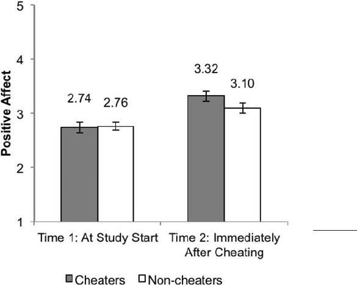
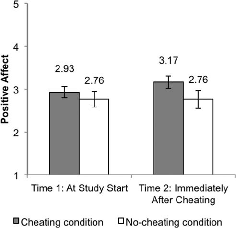
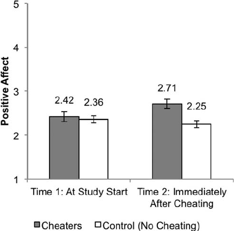
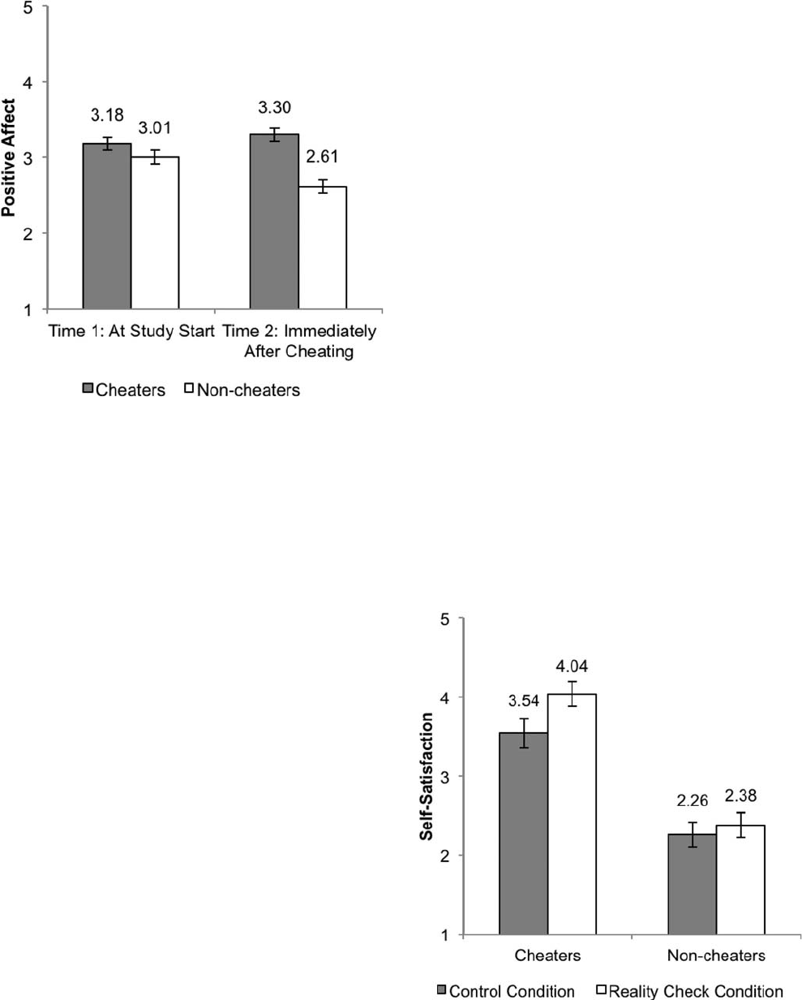

ATTITUDES AND SOCIAL COGNITION
The Cheater’s High: The Unexpected Affective Benefits of
Unethical Behavior
Nicole E. Ruedy
University of Washington
Celia Moore
London Business School
Francesca Gino
Harvard University
Maurice E. Schweitzer
University of Pennsylvania
Many theories of moral behavior assume that unethical behavior triggers negative affect. In this article,
we challenge this assumption and demonstrate that unethical behavior can trigger positive affect, which
we term a “cheater’s high.” Across 6 studies, we find that even though individuals predict they will feel
guilty and have increased levels of negative affect after engaging in unethical behavior (Studies 1a and
1b), individuals who cheat on different problem-solving tasks consistently experience more positive
affect than those who do not (Studies 2–5). We find that this heightened positive affect does not depend
on self-selection (Studies 3 and 4), and it is not due to the accrual of undeserved financial rewards (Study
4). Cheating is associated with feelings of self-satisfaction, and the boost in positive affect from cheating
persists even when prospects for self-deception about unethical behavior are reduced (Study 5). Our
results have important implications for models of ethical decision making, moral behavior, and self-
regulatory theory.
Keywords: cheating, dishonesty, ethics, unethical behavior, affect
About morals, I know only that what is moral is what you feel good
after and what is immoral is what you feel bad after.
—Ernest Hemingway, Death in the Afternoon
I was heady with happiness. Since I hadn’t yet had my first taste of
alcohol, I couldn’t compare the feeling to a champagne high, but it
was the most delightful sensation I’d ever experienced.
—Frank Abagnale, Catch Me If You Can
These two quotations offer contradictory perspectives on the
emotional consequences of unethical behavior. Hemingway’s per-
spective is the more commonly espoused: immoral behavior
causes individuals to feel bad. However, Frank Abagnale, the
swindler made famous in the movie Catch Me If You Can, presents
an alternate view when describing his first successful scam: im-
moral behavior can elicit positive affect (Abagnale & Redding,
2000). A number of scholars have proposed models of ethical
decision making (Haidt, 2001; Kohlberg, 1969; Monin, Pizarro, &
Beer, 2007; Pizarro, 2000; Rest, 1986; Tangney, Stuewig, &
Mashek, 2007; Treviño, 1986), in part to explain the pervasiveness
of unethical behavior (e.g., Callahan, 2004; Mazar, Amir, & Ari-
ely, 2008; Mazar & Ariely, 2006; Murdock & Anderman, 2006).
Many of these models adopt Hemingway’s view, presuming that
unethical behavior triggers negative feelings, such as guilt, shame,
and anxiety (DePalma, Madey, & Bornschein, 1995; Eisenberg,
2000; Massi, 2005), and that the prospect of experiencing these
negative feelings curbs unethical behavior (Baumeister, Vohs,
DeWall, & Zhang, 2007; Wright, 1971).
Notably, none of the extant models of ethical decision making
can account for Abagnale’s experience of feeling “heady with
happiness.” In this article, we challenge the fundamental assump-
tion that unethical behavior necessarily triggers negative affect.
We propose that although many individuals believe that engaging
in unethical behavior will result in increased negative affect, acting
unethically can predictably trigger positive feelings. Across six
experiments, we find support for our predictions.
The Role of Affect in Ethical Decision Making
Emotions are a critical component of any decision (Schwarz,
2000). This is particularly true of ethical decisions, which are often
personal and highly self-relevant. Departing from early theorizing
that viewed ethical decision making as a primarily cognitive pro-
cess (Kohlberg, 1969; Rest, 1986; Treviño, 1986), a growing
literature has begun to explore the role of affect in these choices
This article was published Online First September 2, 2013.
Nicole E. Ruedy, Foster School of Business, University of Washington;
Celia Moore, London Business School, London, United Kingdom; Franc-
esca Gino, Harvard Business School, Harvard University; Maurice E.
Schweitzer, Wharton School, University of Pennsylvania.
The authors are grateful for helpful comments from Joseph Gaspar.
Correspondence concerning this article should be addressed to Francesca
Gino, Baker Library, Bloomberg Center 447, Soldiers Field Road, Harvard
Business School, Harvard University, Cambridge, MA 02163. E-mail:
fgino@hbs.edu
Journal of Personality and Social Psychology, 2013, Vol. 105, No. 4, 531–548
© 2013 American Psychological Association 0022-3514/13/$12.00 DOI: 10.1037/a0034231
531

(Haidt, 2001; Monin et al., 2007; Pizarro, 2000; Tangney et al.,
2007). For instance, recent work in moral psychology shows that
ethical decisions are frequently informed by one’s feelings and
intuitions (Greene & Haidt, 2002; Haidt, 2001). In fact, scholars
and philosophers alike have long assumed a link between affect
and ethical decision making (see Plato, Republic, 2:359a–360d,
10:612b; see also Doris, 2002, Chapter 8; Rawls, 1971).
Accounts of this link typically presume that immoral acts trigger
negative affect (such as guilt, shame, and remorse) and that the
anticipation of negative affect represents an expected cost that
curbs unethical behavior (Bandura, 1990; Baumeister et al., 2007;
McGraw, 1987; Schwarz, 2000; Wright, 1971). For example,
recall studies about emotional reactions to past transgressions have
asked participants to recall times they felt a specific negative
emotion, such as guilt or shame (e.g., Baumeister, Stillwell, &
Heatherton, 1995; Tracy & Robins, 2006). Similarly, prediction
studies have found that when individuals expect to experience guilt
following a particular behavior, they are less likely to engage in
that behavior (Massi, 2005). These study designs are unlikely to
detect positive affective reactions. The one study that solicited a
broader set of emotional reactions asked participants to recall
episodes of academic dishonesty (Whitley, 2001). In this study as
well, participants reported that they had experienced more negative
than positive affect.
However, the focus of these studies on recall and prediction
limit the conclusions they can draw about the actual affective
consequences of unethical behavior. Recalling affective experi-
ences is difficult; individuals are notoriously inaccurate when
recalling emotions (Thomas & Diener, 1990). In addition, individ-
uals tend to both mispredict and misremember unethical behavior
(Tenbrunsel, Diekmann, Wade-Benzoni, & Bazerman, 2010). As a
result, participants’ reports in these types of studies may reflect lay
theories about affective reactions to unethical behavior or self-
presentational concerns rather than their actual reactions at the
time they engaged in the behavior. Similarly, the few laboratory
studies that have directly tested the relationship between unethical
behavior and affect have examined a very specific type of uneth-
ical behavior—acts that comply with an authority figure’s request
to cause direct harm to a salient victim (e.g., administering an
electric shock to a confederate at the request of the experimenter).
These studies consistently found increases in negative affect fol-
lowing this type of unethical behavior (Brock & Buss, 1964; Buss
& Brock, 1963; Okel & Mosher, 1968; Ring, Wallston, & Corey,
1970). To our knowledge, only one study has examined the affec-
tive consequences of elicited unethical behavior that did not in-
volve direct harm to a salient victim (Wallington, 1973), and this
study found no significant effects of unethical behavior on partic-
ipants’ negative affect. The author did not measure positive affect.
The small set of field studies that have investigated affective
consequences of unethical behavior has also focused on behavior
that involves harm to salient victims (i.e., where it is clear to the
perpetrator that they have directly hurt someone else by their
actions). For instance, Evans, Ehlers, Mezey, and Clark (2007)
found that out of 105 perpetrators of violent crimes, 46% reported
that they were haunted by distressing memories, and 6% showed
signs of Posttraumatic Stress Disorder (PTSD), a condition char-
acterized in part by negative emotional responses. Byrne’s (2003)
work on trauma reactions in perpetrators of violent crimes suggests
that certain types of crimes, including those that involve known
victims, are more likely to result in PTSD. Research on emotional
consequences of ethical transgressions in the workplace has also
focused on actions that cause direct harm to salient victims, such
as workplace bullying, harassment, discrimination, injustice, and
victimization (Giacalone & Promislo, 2010).
In summary, empirical work across laboratory and field studies
have supported the prevalent assumption that unethical behavior
triggers negative affect, but these studies have focused on acts that
harm a salient victim, often at the directive of someone else. What
role does harm play in unethical behavior? Certainly, perceptions
of harm play a critical role in moral judgment. For example, Gray,
Young, and Waytz’s (2012) model of the moral dyad suggests that
individuals’ prototype of wrongdoing involves interpersonal harm.
This means that the moral aspects of an act are more cognitively
accessible when it involves interpersonal harm. However, restrict-
ing the definition of unethical behavior to acts that cause direct
interpersonal harm would be problematic. Many acts of theft and
dishonesty—including computer piracy, tax evasion, insurance
fraud, workplace theft, and cheating in scholarly endeavors—do
not cause (obvious) direct harm to a salient victim. Yet, they do
contravene a moral principle, such as fairness or honesty, and are
therefore widely recognized as unethical, even without an element
of interpersonal harm.
Thus, building on traditions in both moral psychology (Uhl-
mann, Pizarro, Tannenbaum, & Ditto, 2009) and philosophy (Hare,
1981; Kant, 1785/1993), we define unethical behavior as acts that
violate widely held moral principles (such as honesty or fairness).
1
This definition includes behaviors such as cheating, dishonesty,
and stealing. Many behaviors that violate widely held principles
lack a specific, identifiable victim but harm the broader commu-
nity and constitute unethical behavior (Alicke, 2012; Pizarro,
Tannenbaum, & Uhlmann, 2012). For instance, unethical actions
may undermine a norm (Gray, Waytz, & Young, 2012) or violate
abstract concepts such as “community” (Rozin, Lowery, Imada, &
Haidt, 1999) or “purity” (Haidt, 2001).
Surprisingly, very little prior work has examined the affective
consequences of voluntary unethical behavior without obvious
harm or a salient victim. This is an important omission, not only
because these types of unethical behavior are common (Callahan,
2004) and costly (Hollinger & Langton, 2007; U.S. Internal Rev-
enue Service, 2010) but also because the affective consequences of
these acts may be very different. Thus, in contrast to the tradition-
al—and Hemingway’s—perspectives, we propose that voluntary
unethical acts without salient victims and obvious harm not only
fail to elicit negative affect but may actually evoke positive affect,
a phenomenon we term the “cheater’s high.” The idea that uneth-
ical behavior can trigger positive affect is consistent with many
anecdotal accounts of dishonesty, theft, and fraud. These accounts
include wealthy individuals who delight in shoplifting affordable
goods (Seagrave, 2001), joy-riders who steal cars for the thrill
(Katz, 1988), and fraudsters who revel in their misdeeds (Abagnale
& Redding, 2000).
We note that the “cheater’s high” is related to two streams of
prior research. First, it is related to Ekman’s (2001) concept of
“duping delight,” or the exhilaration caused by successfully de-
1
Consistent with their etymological roots as synonyms, we also use we
use the terms “immoral” and “unethical” interchangeably.
532
RUEDY, MOORE, GINO, AND SCHWEITZER
ceiving others, which to date, lacks an empirical demonstration
(DePaulo et al., 2003). Second, it is related to research on “for-
bidden fruit,” which suggests that people find objects and experi-
ences that are forbidden or taboo to be more attractive and alluring
than those that are not forbidden (Alberts, Mulkens, Smeets, &
Thewissen, 2010; Fishbach, 2009; Mann & Ward, 2001; Pech-
mann & Shih, 1999). This work does not address the affective
consequences of unethical behavior but does suggest a contribut-
ing factor: People may enjoy engaging in behaviors that are
prohibited.
We explore the link between unethical behavior and affect in six
experimental studies. We investigate the proposition that affective
reactions to unethical behavior are different from what prior work
has assumed and what individuals predict. Specifically, we chal-
lenge a fundamental assumption of the ethical decision making
literature by considering the possibility that unethical behavior can
trigger positive affective consequences. Our findings break new
ground by demonstrating that theoretical models of ethical deci-
sion making should account for a broader range of affective
consequences than they currently do.
Negative Affective Consequences of
Predicted Unethical Behavior
The pervasiveness and frequency with which people engage in
unethical behavior (Callahan, 2004) contrasts with the desire to
maintain a positive self-concept both privately and publicly (Adler,
1930; Allport, 1955; Rogers, 1959). People are motivated to re-
solve this tension, even when doing so requires a degree of
self-deception or pretense (Schlenker, Forsyth, Leary, & Miller,
1980; Tajfel, 1982). Moral values constitute a central aspect of an
individual’s positive self-image (Chaiken, Giner-Sorolla, & Chen,
1996), and consistent with the motivation to maintain a positive
self-image, most people perceive themselves as honest and deserv-
ing and believe firmly in their own morality (Aquino & Reed,
2002; Greenwald, 1980; Sanitioso, Kunda, & Fong, 1990).
The misalignment between actions (e.g., one’s unethical behav-
ior) and internal desires (e.g., one’s desire to be ethical) creates a
psychological threat for individuals as well as a sense of disso-
nance (Festinger, 1957). Behavioral ethics scholars argue that
when people face ethical dilemmas, they experience a tension
between a person’s “want” and “should” selves (Bazerman, Ten-
brunsel, & Wade-Benzoni, 1998; Mead, Baumeister, Gino,
Schweitzer, & Ariely, 2009; Tenbrunsel et al., 2010). The “want”
self is defined by short-term goals, impulsivity, and “hot” deci-
sions, whereas the “should” self involves long-term, rational, and
“cold” decisions. Tenbrunsel et al. (2010) propose that the
“should” self dominates the prediction phase (when people con-
sider future decisions) and that the “want” self dominates the
action phase. As a result, people overestimate their future ethical-
ity.
This prediction is consistent with findings that ethical forecasts
reflect one’s hopes and ideals (Kivetz & Tyler, 2007; Newby-
Clark, Ross, Buehler, Koehler, & Griffin, 2000) and undervalue
both situational constraints (Diekmann, Tenbrunsel, & Galinsky,
2003) and one’s motivations in the heat of the moment (Diekmann
et al., 2003; Diekmann, Walker, Galinsky, & Tenbrunsel, 2012).
As a result, predictions about one’s ethical behavior tend to be
overly optimistic. For example, people overestimate their future
altruistic actions in contexts such as donating time and money to
charity (Epley & Dunning, 2000) and participating in a blood drive
(Trope & Liberman, 2003).
In the same way that the “should” self mispredicts ethical
behavior, we expect the “should” self to mispredict that unethical
behavior will evoke negative affect. We postulate that when people
predict what their affective state will be after they act unethically,
their “should” self and their desire to be moral will be salient. The
discrepancy between their moral self-image and the immoral acts
they imagine engaging in will result in projected dissonance. From
this perspective, focusing on ideals and values, the “should” self
will overestimate the psychic cost that they will bear and will
underestimate their reactions to any psychological or material
benefits that result from the unethical behavior. Thus, we hypoth-
esize that when individuals predict their affective reactions to
unethical behavior, they will predict that they will experience
heightened negative affect (Hypothesis 1).
Positive Affective Consequences of
Actual Unethical Behavior
Affective forecasts (e.g., how much we will enjoy a planned
beach vacation) are commonly biased (Gilbert, Gill, & Wilson,
2002; Kurtz, Wilson, & Gilbert, 2007; Wilson & Gilbert, 2003),
and we expect individuals to mispredict how they will feel fol-
lowing unethical behavior. In the case of affective reactions to
unethical behavior that lack a salient victim, we expect people to
predict they will experience heightened negative affect after be-
having unethically when in fact they will experience a boost in
positive affect.
We expect the “should” self to guide predictions but the “want”
self to guide ethical decisions (Tenbrunsel et al., 2010). People in
a “want” state are tempted by something they acutely desire. They
may feel a strong pull to engage in behavior that confers an
immediate reward, even if the behavior is not consistent with their
ideals and long-term goals. In a classic self-control situation, an
individual in the “want” state might sabotage their weight loss
plans by eating a rich dessert. In the moment, the immediate
reward is more compelling than adherence to their long-term goal.
In the context of ethics, someone who is tempted to engage in an
unethical behavior, guided by the “want” self, will be more likely
to focus on the immediate benefits they might accrue rather than
the potential costs that they may incur later, such as diminished
self-image or risk to their reputation (Loewenstein, 1996). If an
individual is not attentive to long-term consequences, unethical
acts may fail to induce negative affect in the moment in which an
individual makes a decision.
In the “want” state, individuals may focus on the short-term
benefits they derive from a behavior. As a result, in the “want”
state unethical behavior may elicit positive affect. There are sev-
eral reasons why individuals may derive psychological benefits
from engaging in unethical behavior. First, unethical behavior
often confers an advantage, such as affording access to additional,
undeserved resources. Undeserved gains from unethical behavior
may be encoded as windfalls, whether they represent financial
gains (e.g., additional money), social gains (e.g., beating an oppo-
nent), or psychological gains (e.g., better grades). These windfalls
are positive events that can trigger positive affect (Arkes et al.,
1994; Meloy, Russo, & Miller, 2006).
533
CHEATER’S HIGH?

Second, unethical behavior may confer psychological benefits
derived from a sense of greater autonomy and influence. Engaging
in unethical behavior allows actors to circumvent rules by which
others are bound, giving cheaters an expanded range of options and
greater control over their outcomes. For instance, deception en-
ables individuals to take advantage of others by manipulating the
information that others use to make decisions (Lewicki, 1983). As
a result, unethical behavior may provide an enhanced sense of
control, which can increase positive affect (Carver & Scheier,
1990).
Third, unethical behavior often involves the challenge of break-
ing rules and overcoming systems that are designed to constrain
behavior. Convincing one’s boss of a lie or finding a loophole in
a tax code may represent an interesting and enjoyable challenge. In
a study of cheating at work, a supermarket cashier who consis-
tently embezzled from her register explained that the behavior
made her job “more interesting; it gave her new targets and a sense
of challenge” (Mars, 1982, p. 31). Many people enjoy engaging in
effortful cognitive endeavors (Cacioppo, Petty, Feinstein, & Jarvis,
1996), and succeeding in challenging tasks can engender a sense of
pride.
To date, the fields of behavioral ethics and criminology have
paid scant attention to the possibility that unethical behavior trig-
gers positive affect. In one exception using first-hand accounts,
Katz (1988) describes the emotional seduction or “sneaky thrills”
that individuals derive from crimes, such as joyriding in stolen
cars, vandalism, and shoplifting affordable goods. Katz (1988)
notes that in many first-hand descriptions of these events, the
euphoria of successfully getting away with the crime overshadows
any material gain from the behavior. Other criminology research-
ers also note that “getting away with it” can feel good (Matza &
Sykes, 1961; Moore & Gullone, 1996; Scully & Marolla, 1985).
The fact that one’s behavior is forbidden may enhance this expe-
rience (Wood, Gove, Wilson, & Cochran, 1997). This explanation
is consistent with Frank Abagnale’s opening quote. We expect that
unethical behavior that does not immediately cause interpersonal
harm to create psychological benefits and increase positive affect
(Hypothesis 2).
Overview of the Research
We tested our predictions in six experiments. We first con-
ducted two studies that asked individuals to predict how they
would feel if they acted unethically. In these two prediction
studies (Studies 1a and 1b), participants imagined having the
opportunity to behave unethically and deciding either to act
honestly or dishonestly. In both studies, participants predicted
they (or someone else) would experience negative affect after
behaving unethically.
Next, we conducted four experiments that afforded participants
the opportunity to cheat. Contrary to what people predicted, across
these studies, engaging in unethical behavior (compared to ethical
behavior) increased positive affect without an accompanying in-
crease in negative affect. In Study 2, we identify a “cheaters high”:
individuals who over-reported their performance experienced a
boost in positive affect and no boost in negative affect, compared
to non-cheaters. Study 3 replicates the cheater’s high using novel
experimental methods to address self-selection issues. In Study 4,
we disentangle the effects of cheating and monetary rewards to
find further support for our thesis, and in Study 5, we examine the
underlying mechanism for the cheater’s high. We find that after
cheating, people feel more satisfied with their actions, even in the
presence of explicit acknowledgment that the experimenters are
aware that participants may have cheated.
Study 1: Affective Predictions
We conducted two studies to gauge affective forecasts following
unethical behavior. In the first study, we asked participants to
predict how they would feel after cheating in an experiment. In the
second, we asked participants to predict how they would feel after
lying on a timesheet to their employer. In both cases, we varied
whether participants forecasted their own feelings or the feelings
of someone else. We included this manipulation to test whether
individuals predict different affective reactions for others than they
predict for themselves. This manipulation also helps us determine
whether individuals’ affective predictions are influenced by self-
presentational concerns.
Study 1a: Method
Participants and design. We recruited 290 participants on
Mechanical Turk (hereinafter MTurk; M
age
ϭ 29.29, SD ϭ 8.91;
65% male; 33% students) to complete an online survey for a
payment of $0.50. We dropped eight participants with duplicate IP
addresses, and we report results for the remaining 282.
2
We randomly assigned participants to one of four conditions in
a2(self vs. other) ϫ 2(cheat vs. honest) between-subjects design.
In each condition, participants read a description of an experiment
involving a task that allows participants the opportunity to cheat.
Half the participants imagined themselves in the study (self con-
ditions), and half imagined someone else in the study (other
conditions).
Procedure. We told participants that we were interested in
their predictions of how they or someone else might react to an
experiment we were planning to run in the near future. We de-
scribed the experiment to them, and told them that participants in
this study would have the opportunity to act unethically. The
instructions read,
In the study, we will give participants a simple math test to complete
under time pressure. The test sheet consists of 20 matrices, each based
on a set of 12 three-digit numbers. We will tell participants that they
have 5 minutes to find two numbers per matrix that add up to 10. Each
correctly solved pair pays them $1. In addition to the test sheet, each
participant will receive an envelope with 20 one-dollar bills. At the
end of the study, participants will have to take money according to
their performance and turn back the envelope to the experimenter with
the unearned money. About 10 –15 participants will participate in
each session.
Once the 5 minutes are up, we will give participants a collection slip
on which they are asked to report the number of correctly identified
pairs they’ve found. We will then instruct participants to first recycle
their test sheet (using the recycling box in the room) and then fill out
2
Following a reviewer’s suggestion, we dropped online participants
with duplicate IP addresses because we could not ensure that they did not
complete the study twice. However, in every case, the results are un-
changed when we leave in these participants.
534
RUEDY, MOORE, GINO, AND SCHWEITZER
their collection slips. Once they complete the collection slip, partici-
pants will pay themselves accordingly and take the unearned money in
the envelope to the experimenter as they leave the room. That means
that in this study participants can over-report their performance by
reporting a score that is higher than their actual performance on the
task, and thus make more money on the task.
Manipulation. In the self-cheat condition, we asked partici-
pants “Please imagine being a participant in this experiment.
Imagine that you decided to over-report your performance, and
you report having solved more matrices correctly than you actually
did solve correctly. How likely would you be to experience each of
the following emotions right after reporting the score?” In the
self-honest condition, we asked participants to “Imagine that you
decided to report your performance accurately, and you report
having solved exactly the number of matrices correctly that you
actually did solve correctly. How likely would you be to experi-
ence each of the following emotions right after reporting the
score?” Procedures in the other-cheat and other-honest conditions
were identical except that the questions related to someone else,
for example, “Please imagine a participant in this experiment.
Imagine that this person decided to over-report their performance
...”
Measures. Participants completed the 20-item Positive and
Negative Affectivity Schedule (PANAS; Watson, Clark, & Telle-
gen, 1988), which measures both positive and negative affect (PA:
␣ϭ.88, NA: ␣ϭ.94) using a 5-point scale (ranging from 1 ϭ
Very slightly or not at all to 5 ϭ Extremely). Participants also
answered demographic questions about their age and gender.
Pilot study. To verify that participants viewed the over-
reporting we described in this scenario as unethical, we conducted
a pilot test. We recruited a separate MTurk sample of 107 partic-
ipants (M
age
ϭ 30.40, SD ϭ 9.13; 51% male; 22% students) for a
payment of $0.25. (There were no duplicate IP addresses in this
sample.) In this study, we asked participants to rate the ethicality
of over-reporting one’s performance in this same scenario. That is,
participants read the same description as used in Study 1a, and they
then rated the extent to which they thought over-reporting perfor-
mance in this situation was morally wrong, unethical, and dishon-
est (␣ϭ.88) on a 7-point scale (ranging from 1 ϭ Not at all to 7 ϭ
Very much).
Participants rated over-reporting performance as very unethical.
On the 7-point scale, the average combined rating was 5.87 (SD ϭ
1.32); this average rating is significantly higher than 5, t(106) ϭ
6.77, p Ͻ .001, but not significantly lower than 6, t(106) ϭϪ1.05,
p ϭ .30. These results demonstrate that participants perceive
over-reporting in this domain as unethical.
Results and Discussion
Participants in Study 1a predicted that they and others would
feel significantly lower levels of positive affect and higher levels
of negative affect after cheating than after acting honestly. We
conducted a univariate analysis of variance (ANOVA) using pos-
itive affect as the dependent measure and our two manipulations as
between-subjects factors. Supporting our first hypothesis, partici-
pants predicted that cheating would evoke less positive affect
(M ϭ 2.58, SD ϭ 0.83) than honesty (M ϭ 3.05, SD ϭ 0.75), F(1,
278) ϭ 24.33, p Ͻ .001,
2
ϭ 0.076. Participants in the self
condition reported lower levels of positive affect after cheating
than those in the other condition, F(1, 278) ϭ 14.84, p Ͻ .001,
2
ϭ 0.047; however, the interaction with cheat versus honest was
not significant, F(1, 278) ϭ 0.00, p ϭ .99.
The analogous univariate ANOVA for negative affect revealed
that participants across self and other conditions predicted that
cheating would evoke greater negative affect (M ϭ 2.84, SD ϭ
0.93) than would honest behavior (M ϭ 1.50, SD ϭ 0.63), F(1,
278) ϭ 198.73, p Ͻ .001,
2
ϭ 0.412. We found no difference for
participants in the self or other conditions, F(1, 278) ϭ 0.05, p ϭ
.821, and the interaction between self versus other and cheat
versus honest was not significant, F(1, 278) ϭ 0.99, p ϭ .32.
Study 1b: Method
Participants. One hundred and thirty-seven students (45%
male; M
age
ϭ 20.4, SD ϭ 1.89) completed a survey as part of a
laboratory session in exchange for $10.
Design and procedure. Participants read one of four versions
of a scenario froma2(self vs. other) ϫ 2(cheat vs. honest)
between-subjects design. In the self condition, participants imag-
ined they were Pat, a consultant at a large consulting company. In
the other condition, participants imagined they were Pat’s man-
ager. In the vignette, Pat completes a time sheet that will determine
whether or not Pat will earn a $500 bonus. Pat is 5 hours short of
the 500 billable hours required for the bonus. However, Pat could
bill 5 hours spent on a training course to meet the goal without
anyone finding out, although this is against company policy. In the
cheat condition, participants read “Imagine that [you/Pat] billed 5
training hours. As a result, [you/Pat] reported 500 hours for the
quarter and reached the target for the bonus.” In the honest
condition, participants read, “Imagine that [you/Pat] did not bill
any training hours. As a result, [you/Pat] reported 495 hours for
the quarter and did not reach the target for the bonus.”
After reading the vignette, participants reported the extent to
which they or Pat would feel positive and negative affect after
reporting hours, using the PANAS (Watson et al., 1988, PA: ␣ϭ
.78, NA: ␣ϭ.89).
Results and Discussion
We conducted a univariate ANOVA using positive affect as the
dependent measure and self versus other and cheat versus honest
as the two between-subjects factors. We found that participants
predicted that cheating would lead to greater positive affect (M ϭ
2.61, SD ϭ 0.70) than honesty (M ϭ 2.31, SD ϭ 0.71),
F(1, 133) ϭ 5.97, p ϭ .016,
2
ϭ 0.035. Participants in the self
condition reported lower levels of positive affect after cheating
than those in the other condition, F(1, 133) ϭ 7.99, p ϭ .005,
2
ϭ
0.049; however, the interaction with cheating condition was not
significant, F(1, 133) ϭ 0.00, p ϭ .99.
We conducted a similar univariate ANOVA for negative affect.
This ANOVA revealed that participants across self and other
conditions predicted that negative affect would be greater after
cheating (M ϭ 2.93, SD ϭ 1.01) than after honest behavior (M ϭ
2.12, SD ϭ 0.58), F(1, 133) ϭ 31.94, p Ͻ .001,
2
ϭ 0.184.
Participants in the self condition reported marginally lower nega-
tive affect than those in the other condition, F(1, 133) ϭ 3.19, p ϭ
.076, but the interaction between self versus other and cheating
condition was not significant, F(1, 133) ϭ 0.16, p ϭ .69.
535
CHEATER’S HIGH?

Consistent with the results of Study 1a, results from this study
demonstrate that participants expect to experience more negative
affect after behaving unethically than after behaving honestly. Our
findings regarding positive affect were mixed. In Study 1a, par-
ticipants predicted lower positive affect for cheaters than for
non-cheaters, but in Study 1b, participants predicted higher posi-
tive affect for cheaters. These results did not change depending on
whether participants predicted their own affective state or the
affective state of another person. The results of Study 1a are
consistent with existing models of unethical behavior; results from
Study 1b imply that participants expect cheating to evoke emo-
tional ambivalence. Neither study predicts a “cheater’s high.”
Participants did not predict that cheating, compared to acting
honestly, increases positive affect without an accompanying in-
crease in negative affect.
Criteria for Establishing the Cheater’s High
To document the cheater’s high, we conduct three sets of tests:
(a) We compare changes in positive affect across time for both
cheaters and non-cheaters. Specifically, we expect cheaters to
experience higher levels of positive affect at Time 2 (post-
cheating) than at Time 1 (baseline), and we expect non-cheaters
not to experience a boost in positive affect. (b) We compare
positive affect after the cheating opportunity between cheaters and
non-cheaters. We expect cheaters to report higher positive affect
than non-cheaters at Time 2, but not to differ from non-cheaters at
Time 1. (c) We compare the difference between positive and
negative affect for cheaters and non-cheaters across time. We
expect this difference to vary across time; in the analyses, this
means finding a significant three-way interaction of affect valence
(positive and negative), cheating (yes and no), and time (1 and 2).
3
In particular, we expect that at Time 1, the two-way interaction
between affect valence and cheating will not be significant. At
Time 2, we expect a significant simple two-way interaction be-
tween affect valence and cheating, with a significant difference in
affective valence for cheaters (with positive affect higher than
negative affect), and a non-significant or weaker difference be-
tween positive and negative affect for non-cheaters. We report
results for each of these three criteria in the four studies that
follow. Given the fact that our paradigms involve performing
cognitive tasks and that performance may influence both cheating
(McCabe & Treviño, 1997) and affect (Carver & Scheier, 1990),
we include performance as a covariate in all the studies.
Study 2
In Study 2, we consider affective reactions to actual cheating.
The experimental design affords participants an opportunity to
cheat by overstating performance for an additional payment. This
behavior involves dishonesty and taking unearned money, behav-
ior that falls well within our definition of unethical behavior and
was also rated as unethical in the pilot study reported with Study
1a. We use repeated measures analyses to disentangle the influence
of positive affect on cheating from the effect of cheating on
positive affect.
4
Method
Participants. One-hundred seventy-nine individuals (40%
male; M
age
ϭ 25, SD ϭ 8.80) from a large Northeastern university
participated in the study for a $10 payment plus a bonus based on
their performance.
Procedure. Participants worked in individual cubicles. They
first completed an abbreviated 10-item version of the Positive and
Negative Affectivity Schedule (PANAS; Watson et al., 1988).
Specifically, we used the items excited, enthusiastic, interested,
strong, and determined to measure positive affect (␣ϭ.86) and
upset, hostile, ashamed, jittery, and scared to measure negative
affect (␣ϭ.75).
Next, participants engaged in a timed anagram task. The task,
adapted from Ruedy and Schweitzer (2011) involved unscram-
bling as many of 15 words as participants could in 4 min. Partic-
ipants earned a $1 bonus for every correctly unscrambled word.
The page that listed the scrambled words was stapled to a packet
of sheets and a manila folder. In the packet were two sheets of
carbonless copy paper that, unbeknown to participants, created an
imprint of their writing. At the end of 4 min, the experimenter
asked participants to tear the top sheet out of packet. The experi-
menter then collected the packets and folders. Participants were
not able to see that the packets the experimenter collected con-
tained a complete imprint of the words they had unscrambled.
Next, the experimenter handed out answer keys, and participants
checked their work in complete privacy. This stage of the exper-
iment afforded participants the opportunity to cheat; as they
checked their answers, they could add answers to their answer
sheet. The experimenter determined whether or not participants
had cheated by comparing the imprint of the answers participants
had written down in the first 4 min of the study with the answer
sheets they ultimately submitted for payment after checking their
work.
After, participants answered some brief questions about how
difficult and enjoyable they found the task. Then they completed
the same 10-item affect measure as before (␣
PA
ϭ .90, ␣
NA
ϭ .66).
Participants were also asked to provide any comments they had
about the session so far. At the end of the session, participants
were again asked to provide comments. No participants expressed
suspicion that the purpose of the study was to study cheating
behavior.
Results and Discussion
We excluded six participants for failing to complete the second
affect measure. On average, participants correctly unscrambled
3.84 (SD ϭ 2.08) of the 15 anagrams. Seventy-one (41.0%)
participants cheated by writing in additional answers after the time
to work on the task had ended. Participants who cheated added
2.48 answers on average (SD ϭ 1.98).
Criterion 1. We expect cheaters, but not non-cheaters, to
experience higher levels of positive affect at Time 2 (post-
cheating) than they do at Time 1. That is, we expect a model with
3
We thank Linda Skitka, our associate editor, for guidance in develop-
ing these criteria.
4
We also conducted our analyses without controlling for performance,
and our results for positive and negative affect are nearly identical.
536
RUEDY, MOORE, GINO, AND SCHWEITZER

positive affect as the dependent variable to reveal a two-way
interaction between Time (1 vs. 2) and Cheating (yes, no). In
addition, we expect simple effects tests to show a significant
increase in positive affect across time periods for cheaters but not
for non-cheaters. We tested this by conducting a mixed ANOVA
with positive affect at Time 1 and 2 as the within-subjects factor,
condition as the between-subjects factor, and actual performance
on the matrix task as a covariate. Supporting the cheater’s high, the
two-way interaction was significant, F(1, 170) ϭ 5.18, p ϭ .024,
2
ϭ .024, suggesting that there were differences in the changes in
positive affect across conditions (see Figure 1). Simple effects
testing confirmed that those who cheated experienced an increase
in positive affect, F(1, 170) ϭ 46.77, p Ͻ .001,
2
ϭ .175. In this
study, those who did not cheat also experienced an increase in
positive affect across rounds, F(1, 170) ϭ 21.57, p Ͻ .001,
2
ϭ
.106. This was perhaps due to the fact that the performance
bonuses were substantial, and even those who did not cheat earned
additional money. However, the effect size for time in the cheating
condition (
2
ϭ .175) was greater than the effect size for time in
the no cheating condition (
2
ϭ .106), a result consistent with our
prediction.
Criterion 2. We expect cheaters to report more positive affect
than non-cheaters at Time 2 but not to differ from non-cheaters at
Time 1. Simple effects testing showed that cheaters were direc-
tionally higher in positive affect than non-cheaters at Time 2,
though this difference was not significant, F(1, 170) ϭ 2.76, p ϭ
.099,
2
ϭ .001. Cheaters and non-cheaters did not differ in
positive affect at Time 1, F(1, 170) ϭ 0.04, p ϭ .84.
Criterion 3. To test our third criterion, we conducted a mixed
ANOVA with cheating (yes, no) as the between-subjects factor,
affective valence (positive and negative) and Time (1 and 2) as
within-subjects factors, and actual performance on the anagram
task as a covariate. The results revealed a significant three-way
interaction between cheating, affect valence, and time, F(1, 170) ϭ
5.53, p ϭ .020,
2
ϭ .025. To explore the nature of this three-way
interaction, we tested the simple interaction of Cheating ϫ Affec-
tive Valence separately at Time 1 and Time 2. At Time 1, the
simple interaction was not significant, F(1, 170) ϭ 0.38, p ϭ .54.
At Time 2, it approached marginal significance, F(1, 170) ϭ 2.29,
p ϭ .13. Examining the simple effects at Time 2, the difference
between positive and negative affect was significant for both
cheaters (M ϭ 1.87, SE ϭ 0.12); F(1, 170) ϭ 261.93, p Ͻ .001,
2
ϭ .601, and non-cheaters (M ϭ 1.65, SE ϭ 0.10); F(1, 170) ϭ
290.32, p Ͻ .001,
2
ϭ .626, but the effect size was larger for
cheaters than non-cheaters (albeit not significantly so).
5
In this study, all participants experienced increases in both
positive and negative affect during the course of the experiment.
However, for those who decided to cheat, their boost in positive
affect was larger than the increase experienced by non-cheaters.
Traditional significance testing did not support all of the criteria of
the cheater’s high hypothesis in this study. However, all the results
were nonetheless in the predicted direction, providing suggestive
evidence for a cheater’s high. The Study also has two additional
limitations that we address in our following studies. First, cheating
in this study was a self-selected behavior. This is broadly true of
unethical behavior, but we seek to document the cheater’s high in
a paradigm with random assignment. Second, cheating in this
study was associated with higher levels of payment. Though this is
also a common feature of cheating behavior, we seek to replicate
the cheater’s high in a context that disentangles cheating from
financial rewards.
Study 3: Ruling Out Self-Selection
An important challenge for scholars investigating unethical be-
havior is that unethical behavior is often self-selected: People
decide whether to behave dishonestly or honestly. As a result, the
cheater’s high we observe in Study 2 could reflect self-selection.
We address this concern in Study 3 with a novel experimental
approach for studying ethical decision making. In this study, we
pair each participant with a confederate and have them work
together and share a joint reward. The confederate partners either
do or do not over-report their joint performance. Thus, in this
study, we investigate the “cheater’s high” for participants ran-
domly assigned to either a cheating or no-cheating condition. We
also use a very different sample population in a different country.
Method
Participants. We recruited 47 participants (33% male;
M
age
ϭ 27, SD ϭ 9.0; 62.5% students) at a university in London,
England. Participants earned £10 ($15.50) for participating in the
5
One possible concern is that the negative affect items in the PANAS
might not represent the types of negative affect associated cheating. To
address this concern, we conducted a separate pilot study on Amazon
MTurk with 103 participants (61% male, M
age
ϭ 30, SD ϭ 10.7 years) who
were paid $.50. We asked each participant to identify affect items he or she
thought someone would experience after cheating. Re-running our analyses
for Studies 2, 3, 4, and 5 with the subset of negative affect items that a
majority of participants identified as relevant (guilty, ashamed, jittery, and
nervous), we found identical results to those we report.
Figure 1. Study 2 means (Ϯ1 SE) of positive affect before and after the
cheating opportunity for cheating and honest participants. SE ϭ standard
error.
537
CHEATER’S HIGH?

study and had the chance to earn up to an additional £10 in bonus
based on their performance.
Procedure. We randomly assigned participants to one of two
conditions (cheating or no-cheating). In both conditions, partici-
pants completed a problem-solving task that included 20 matrices,
each based on a set of 12 three-digit numbers (adapted from Mazar
et al., 2008). We gave participants 5 min to find two numbers in
each matrix that summed to 10; this duration was not sufficient for
anyone to solve all 20 matrices (M
solved
ϭ 5.0, SD ϭ 3.2,
Max
solved
ϭ 13.0).
Participants always completed the matrix task in a room with a
confederate. When the experimenter brought the confederate and
the participant to the room, she left them with a timer set for 5 min
and informed them that when the timer went off, they should
switch sheets and grade each other’s worksheet. We also informed
participants that they would each earn a bonus based upon the total
number of matrices they and their (confederate) partner scored on
the task, £0.25 ($0.39) for each correct answer, up to a total of £10.
When the experimenter returned to the room, she first asked the
participant to report the confederate’s score. The confederate al-
ways answered five matrices correctly, and every participant ac-
curately reported five. Then, the experimenter asked the confed-
erate to report the participant’s score.
In the no-cheating condition, the confederate accurately reported
the participant’s score. In the cheating condition, the confederate
always added five to the total number of matrices that the partic-
ipant had legitimately solved. This over-statement corresponded to
an additional payment of £1.25 ($1.94) that participants had not
legitimately earned. None of the participants in the cheating con-
dition corrected the confederate’s over-reporting of their score, and
none reported suspicion that the purpose of the study was to test
their reactions to the confederate’s behavior.
We collected affect measures (using the abbreviated PANAS;
Mackinnon et al., 1999) upon participants’ arrival (Time 1, ␣
PA
ϭ
.81; ␣
NA
ϭ .85) and immediately after the cheating manipulation
(Time 2, ␣
PA
ϭ .85; ␣
NA
ϭ .77).
Results and Discussion
One participant took their matrix task with them so we do not
have a measure of their true performance. We report analyses for
the remaining 46 participants. We expected participants in the
cheating condition, compared to those in the no-cheating condi-
tion, to experience the cheater’s high and report a boost in positive
affect.
Criterion 1. We conducted a mixed ANOVA with positive
affect at Time 1 and 2 as the within-subjects factor, condition as
the between-subjects factor, and actual performance on the matrix
task as a covariate. This analysis revealed a marginally significant
two-way interaction, F(1, 43) ϭ 3.03, p ϭ .089,
2
ϭ .042,
suggesting that there were differences in the changes in positive
affect across conditions. Simple effects testing confirmed that
those in the all-cheating condition experienced a significant in-
crease in positive affect, F(1, 43) ϭ 4.26, p ϭ .045,
2
ϭ .066, and
that those in the no-cheating condition did not, F(1, 43) ϭ 0.22,
p ϭ .64 (see Figure 2).
Criterion 2. We next examine whether or not cheaters expe-
rience similar positive affect to non-cheaters at Time 1 but greater
positive affect than non-cheaters at Time 2. In additional simple
effects testing, we find that cheaters experienced marginally higher
positive affect than non-cheaters at Time 2, F(1, 43) ϭ 3.60, p ϭ
.064,
2
ϭ .053, but not at Time 1, F(1, 43) ϭ 0.24, p ϭ .63.
Criterion 3. We conducted a mixed ANOVA with cheating
as the between-subjects factor, affective valence, and Time as
within-subjects factors, and actual performance on the matrix
task as a covariate. The results revealed a marginally significant
three-way interaction between cheating, affect valence, and
time, F(1, 43) ϭ 2.95, p ϭ .093,
2
ϭ .040. At Time 1, the
simple interaction of cheating and affective valence was not
significant, F(1, 43) ϭ 0.01, p ϭ .92, as we expected. At Time
2, however, it approached marginal significance, F(1, 43) ϭ
2.54, p ϭ .12. Examining the simple effects at Time 2, the
difference between positive and negative affect was significant
for both cheaters (M ϭ 1.70, SE ϭ 0.21); F(1, 43) ϭ 68.99, p Ͻ
.001,
2
ϭ .596, and non-cheaters (M ϭ 1.22, SE ϭ 0.21); F(1,
43) ϭ 32.55, p Ͻ .001,
2
ϭ .407, but again was (non-
significantly) larger for cheaters than non-cheaters. As in Study
2, traditional significance testing did not support Criterion 3 of
the cheater’s high hypothesis, but the results were in the pre-
dicted direction.
In Study 3, we introduce a novel approach for studying unethical
behavior with a method that randomly assigns participants to a
cheating or no-cheating condition. By assigning participants to a
cheating condition, results from Study 3 document a cheater’s high
that cannot be explained by self-selection. Although our approach
in this study addresses the problem of self-selection, we acknowl-
edge that this method introduces two issues that may influence our
results. First, participants in the all-cheating condition may have
felt morally superior to the confederate who misreported their
score. This social comparison may have increased positive affect
and amplified our effect. However, this design also may have
created social pressure for participants to conform with the con-
Figure 2. Study 3 means (Ϯ1 SE) of positive affect pre- and post-study,
by cheating condition.
538
RUEDY, MOORE, GINO, AND SCHWEITZER
federate. Succumbing to social pressure is an aversive experience
(Brehm, 1966), which would have dampened our effects in the
all-cheating condition. As a result, characteristics of the experi-
mental design may have both amplified as well as dampened the
cheater’s high. We therefore sought to create an additional exper-
imental paradigm that would allow us to address self-selection
issues in a different way, as well as address concerns that unearned
financial rewards are driving our result.
Study 4: Effects of Incentives
In Study 4, we disentangle the effects of financial rewards from
the effects of cheating. In this study, participants have no financial
incentives for cheating. We test whether or not participants expe-
rience a boost in positive affect after cheating even in the absence
of financial incentives. Study 4 also addresses concerns about
self-selection, using a different approach than the one we used in
Study 3. In Study 4, we randomly assign participants to either an
experimental condition, where cheating is possible, or a control
condition, where cheating is not possible. This design allows us to
compare participants who chose to cheat with participants who did
not have the option to cheat. In this way, we can address the
concern that choosing not to cheat might have consequences for
positive affect and that this effect might account for the difference
in positive affect between cheaters and non-cheaters. We also test
whether a psychological sense of relief after not being caught for
cheating may be driving the cheater’s high.
Method
Participants and design. We recruited 161 students (69%
male; M
age
ϭ 20.65, SD ϭ 2.41) from a large Southeastern
university and paid them $8 for their participation, with no oppor-
tunity to win additional money depending on performance. Partic-
ipants were randomly assigned to one of two conditions: a control
condition and an experimental condition where they were given
the opportunity to cheat.
Procedure. We told participants that the study included a
variety of tasks that they would complete sequentially. The in-
structions informed participants that we were interested in exam-
ining different problem solving techniques and their link to per-
sonality. In addition, the instructions informed participants that we
were also interested in studying emotions across short periods of
time and that they would complete short surveys asking them
about their feelings more than once throughout the study. We
collected affect measures using the full PANAS (Watson et al.,
1988) upon arrival (Time 1, ␣
PA
ϭ .89; ␣
NA
ϭ .79) and immedi-
ately after the cheating manipulation (Time 2, ␣
PA
ϭ .88; ␣
NA
ϭ
.87).
In addition to the items measuring positive and negative affect,
we also included an item measuring relief (“relieved”) both at
Time 1 and at Time 2. At Time 2, we also asked participants to
indicate their agreement with three items measuring relief (“I feel
as if a weight has been lifted off my shoulders,” “I can breathe
easily now,” and “I feel like I have just experienced a release of
tension,” ␣ϭ.91). We included these relief measures to rule out
an alternative explanation for the effects of cheating on positive
affect we observed in Studies 2 and 3: that cheaters experience a
sense of relief after not being caught for their unethical behavior.
Problem-solving task. After answering the short emotion
questionnaire, participants received instructions for the problem-
solving task. The task required them to answer 20 math and logic
problems. Participants had 25 s to read each problem and choose
one of five possible answers. A timer on the computer screen
helped them keep track of time on each problem. Participants were
also told that, “for each problem, when time is up, you will be
automatically transferred to the next problem. If you select one of
the answers before time is up in any given round, you will
automatically be moved to the next problem. Note that wrong
answers will not harm your score.” After these instructions, par-
ticipants were given an example so that they would become
familiar with the task. Next, participants read the following instruc-
tions, “NOTE that this problem solving task is an INTELLIGENCE
TEST that is designed to assess your cognitive abilities. High
scores on this test correlate with overall intelligence and predict
personal and professional success. The computer will record the
number of problems you solve correctly and will show you your
performance at the end of the task.”
In the control condition, participants then moved to the first
problem. In the experimental condition, they received the follow-
ing additional piece of information before moving to the first
problem: “During the problem solving task, some browsers will
display the correct answer on the screen if you click on the button
labeled ‘CORRECT ANSWER.’ Just disregard that button if you
see it on the screen and solve the problems on your own.”
After completing the problem-solving task, participants re-
sponded to the second set of affect measures, reported their level
of relief and then answered a few demographic questions. They
were then shown their overall score on the problem-solving task.
Finally, they answered two questions assessing their level of
suspicion. In particular, they indicated what they thought the study
was about and reported any additional comments they had.
Results and Discussion
Suspicion. Analysis of participants’ answers to the question
assessing potential suspicion revealed that no participants thought
the study was testing cheating or the link between cheating and
emotions.
Proportion of cheating participants. In the experimental
condition, 68% of participants (52 out of 77) cheated in at least one
round. In Studies 2 and 3, we compared participants who cheated
to participants who did not cheat. In this design, we compare
participants who cheated in the experimental condition to partici-
pants in the control condition, which afforded no opportunity to
cheat. We note, however, that the nature and significance of our
results do not change if we conduct analyses comparing cheaters in
our experimental condition to control participants and non-
cheaters in our experimental condition (as part of the same group).
Criterion 1. We conducted a mixed ANOVA with positive
affect at Time 1 and Time 2 as the within-subjects factor, and
cheating versus control condition as the between-subjects factor. In
this study, we did not control for task performance, because unlike
Studies 2 and 3, participants in this study did not know how they
performed on the problem-solving task until the end of the study.
(However, our results do not change if we control for perfor-
mance.) This analysis revealed a significant two-way interaction,
F(1, 134) ϭ 7.73, p ϭ .006,
2
ϭ .047, suggesting that there were
539
CHEATER’S HIGH?

differences in the changes in positive affect across conditions.
Simple effects testing confirmed that those who cheated signifi-
cantly increased in positive affect, F(1, 134) ϭ 8.92, p ϭ .003,
2
ϭ .055, whereas those in the no-cheating condition did not,
F(1, 134) ϭ 0.49, p ϭ .49 (see Figure 3).
Criterion 2. We next examine whether or not cheaters report
more positive affect than non-cheaters at Time 1 and Time 2.
Consistent with the cheater’s high, simple effects tests reveal that
cheaters significantly differed from non-cheaters in positive affect
at Time 2, F(1, 134) ϭ 9.51, p ϭ .002,
2
ϭ .059, but not at Time
1, F(1, 134) ϭ 0.17, p ϭ .68.
Criterion 3. We conducted a mixed ANOVA with cheating as
the between-subjects factor, and affective valence and time as
within-subjects factors. The results revealed a significant three-
way interaction between cheating, affect valence, and time, F(1,
134) ϭ 6.48, p ϭ .012,
2
ϭ .039. As we expect, the simple
interaction of cheating and affective valence was not significant at
Time 1, F(1, 134) ϭ 0.78, p ϭ .38. However, consistent with our
predictions, it was significant at Time 2, F(1, 134) ϭ 11.69, p ϭ
.001,
2
ϭ .073. Examining the simple effects at Time 2, the
difference between positive and negative affect was significant for
both cheaters (M ϭ 0.98, SE ϭ 0.11); F(1, 134) ϭ 75.36, p Ͻ .001,
2
ϭ .353, and non-cheaters (M ϭ 0.49, SE ϭ 0.09); F(1, 134) ϭ
30.30, p Ͻ .001,
2
ϭ .177, but was larger for cheaters than
non-cheaters. This pattern of results is consistent with Criterion 3
of the cheater’s high hypothesis.
Relief. We then conducted a mixed ANOVA with the single
item measure of relief at Time 1 and Time 2 as the within-subjects
factor, and cheating condition as the between-subjects factor. This
analysis revealed no significant effects (all ps Ͼ .22). Next, we
examined the three-item measure of relief we collected after par-
ticipants had the opportunity to cheat. Participants who cheated in
the experimental condition reported experiencing the same amount
of relief (M ϭ 2.78, SD ϭ 0.95) as did participants in the control
condition who did not have the opportunity to cheat (M ϭ 2.65,
SD ϭ 1.02), t(134) ϭ 0.75, p ϭ .46.
These findings provide further support for a link between cheat-
ing and positive affect. First, these results demonstrate that cheat-
ing triggers an emotional “high” independent of its associated
financial rewards. Second, the use of the control condition as the
comparison group demonstrates that the differences in affect are
driven by a positive affect boost in cheaters, rather than by affec-
tive reactions for those who chose not to cheat when they have the
opportunity. Third, these results indicate that the cheater’s high is
not driven by a sense of relief after not getting caught cheating.
Study 5: Getting Away With It
In Study 5, we investigate the underlying mechanism of the
cheater’s high. In this study, we consider the possibility that the
cheater’s high is driven by the thrill of getting away with unethical
behavior. To test for this possibility, we explicitly acknowledge
the potential for cheating in our study to some of our participants.
In prior studies of unethical behavior, experimenters have not
explicitly confronted cheaters with the acknowledgment that over-
reporting performance in the experiment is possible and that it
constitutes cheating. Schweitzer and Hsee (2002) and Shalvi,
Dana, Handgraaf, and De Dreu (2011) identify available justifica-
tions as an essential antecedent to lying, and a number of other
researchers suggest that individuals strive to preserve their moral
self-concept while engaging in unethical behavior through self-
deception or moral rationalization (Gino, Ayal, & Ariely, 2009;
Mazar et al., 2008; Mead et al., 2009).
If our effects are driven by participants’ self-deception or moral
rationalizations, then confronting participants with the experiment-
er’s recognition that over-reporting performance would constitute
cheating should prevent the possibility of preserving a positive
moral self-concept, increasing guilt and negative affect and damp-
ening positive affect. If, however, the cheater’s high is triggered by
the thrill of getting away with unethical behavior, increases in
positive affect should be amplified when participants are made
aware that they did “get away with” cheating, engendering a
feeling of self-satisfaction. In order to investigate this second
explanation, we measured self-satisfaction as a potential mediator
of the cheater’s high.
Thrill is very different from relief, which we tested in Study 4.
Relief is triggered by avoiding an aversive experience (Sweeny &
Vohs, 2012) and reflects a shift from a state of high negative
affect, defined as “subjective distress and unpleasurable engage-
ment,” to one of lower negative affect, defined as “a state of
calmness and serenity” (Watson et al., 1988, p. 1063). In contrast,
the thrill of the cheater’s high is likely to be associated with
approach-oriented emotions, such as the positive affect associated
with “getting away with” cheating (Carver, 2001; Watson, Wiese,
Vaidya, & Tellegen, 1999). For these reasons, we conceptualize
the “thrill” of getting away with something as distinct from relief.
Method
Participants. Two hundred and five (46% male; M
age
ϭ 34,
SD ϭ 11.6) participants were recruited from MTurk to complete an
online study. Participants earned $0.50 for participating in the
Figure 3. Study 4 means (Ϯ1 SE) of positive affect pre- and post-study,
by condition.
540
RUEDY, MOORE, GINO, AND SCHWEITZER
study and had the chance to earn up to an additional $4.50 in
bonuses based on their reported performance.
Design and procedure. The study was presented as a test of
performance under time pressure. We randomly assigned partici-
pants to one of two conditions (“reality check” vs. control). Par-
ticipants in both conditions completed the full PANAS (Watson et
al., 1988, PA: ␣ϭ.92, NA: ␣ϭ.89) and then completed an
anagram task (adapted from Wiltermuth, 2011), designed to detect
cheating in an online environment. The anagram task presents
participants with a list of nine jumbled words and instructions that
read,
Each jumble has only one correct answer, and the jumbles must be
solved in order. In other words, if you successfully unscramble the
first three word jumbles but not the fourth, you will earn a bonus only
for the first three—even if you also successfully unscramble the fifth,
sixth, and seventh word jumbles.
Participants were asked to solve the jumbles in order, not
proceeding to the next one unless the prior one had been solved.
They were also instructed to “use only your own mind, and no
other tools, to solve the jumbles” so that it would be clear that
using online anagram unscramblers was not permitted.
The third jumble in the list was “UNAAGT,” for which the only
solution is “TAGUAN,” a species of flying squirrel. Previous
pretesting has confirmed that the likelihood of correctly identify-
ing this solution is miniscule (Wiltermuth, 2011), and even the
largest online web-based anagram solving programs do not return
“TAGUAN” as an answer.
Participants had 10 min to solve as many of the jumbles as
possible in the order in which they were presented. Next, they
turned to a page on which they reported how many jumbles they
correctly unscrambled, again being reminded that they should only
report the number they had been able to consecutively solve. We
interpret any answer of 3 or more to be indicative of cheating on
the task.
Experimental manipulation. In this experiment, we manip-
ulated whether participants were confronted with the experiment-
er’s explicit acknowledgment that participants could misrepresent
their performance in the anagram task. After reporting their an-
swers, all participants read the following:
Thank you for your participation in this series of tasks. You have one
more task to complete before the end. Your data is important to us as
we are trying to understand performance under time pressure.
In the “reality check” condition, participants also read:
We realize we cannot check your answers (i.e., whether you actually
solved correctly the jumbles you told us you solved) and that you may
have cheated on this task by inflating your performance. We hope you
reported your answers honestly.
To emphasize the fact that their answers would not be reliable if
they had misrepresented their true performance, we also asked
participants in this condition, “To what extent can we rely on your
answers?” Responses were provided on a 5-point scale ranging
from 1 ϭ “Not at all” to 5 ϭ “Completely.”
Post-manipulation measures. After this manipulation, par-
ticipants completed the PANAS again (PA: ␣ϭ.93, NA: ␣ϭ
.79). To assess the extent to which cheating may provide a feeling
of self-satisfaction, we also asked the extent to which participants
felt clever, capable, accomplished, satisfied, and superior (mea-
sured on the same 5-point scale as the PANAS, from “not at all”
to “extremely”). We averaged the responses to these five items to
create a measure of feeling clever or self-satisfied (␣ϭ.93).
Results and Discussion
We excluded two participants for failing an attention filter that
preceded our manipulation. This question listed a series of activ-
ities that people might enjoy on a daily basis, but the instructions
for the questions required that they only check the activity “cook-
ing” from a list of 14 activities. We excluded an additional four
who participated using duplicate IP addresses, though the nature
and significance of our results do not change if we include them.
Fifty-two percent of participants reported they successfully un-
scrambled the third anagram (or more), reporting on average
having solved 4.61 of the anagrams (SD ϭ 2.80).
Self-rated reliability. Participants in the “reality check” con-
dition were asked to rate the reliability of their results. Within this
condition, cheaters rated their responses as less reliable (M ϭ 4.67,
SD ϭ 0.58) than did honest participants (M ϭ 4.95, SD ϭ 0.31),
t(97) ϭ 2.91, p ϭ .004.
If our effect is driven by the ability of individuals to deceive
themselves about the nature of their actions, the “cheater’s high”
should be moderated when participants are confronted with an
explicit acknowledgment that the experimenters are aware that
they could be cheating. However, if participants revel in the fact
that they are cheating and “getting away with it,” as we predict,
then our manipulation will not curtail the cheater’s high. In fact, it
should highlight the fact that they have transgressed, boosting the
effect and producing a greater increase in positive affect after
cheating.
Criterion 1. Since we have no way to accurately measure
performance in this study, we could not include it as a covariate in
these analyses. Consistent with the results from Studies 2, 3, and
4, a mixed ANOVA with positive affect at Time 1 and 2 as the
within-subjects factor and condition and cheating as the between-
subjects factors revealed a significant two-way interaction, F(1,
195) ϭ 39.00, p Ͻ .001,
2
ϭ .160, indicating that there were
differences in the changes in positive affect between cheaters and
non-cheaters. Simple effects testing confirmed that cheaters expe-
rienced a significant increase in positive affect from Time 1 to
Time 2, F(1, 195) ϭ 4.51, p ϭ .035,
2
ϭ .017, while non-cheaters
experienced a significant decrease in positive affect, F(1, 195) ϭ
43.63, p Ͻ .001,
2
ϭ .176 (see Figure 4).
Criterion 2. In addition, simple effects testing revealed that
cheaters experienced significantly more positive affect than non-
cheaters at Time 2, F(1, 195) ϭ 29.32, p Ͻ .001,
2
ϭ .125, but
not at Time 1, F(1, 195) ϭ 1.99, p ϭ .16.
Criterion 3. We conducted a mixed ANOVA with cheating
(yes, no) and condition (reality check vs. not) as the between-
subjects factors and affective valence and time as within-subjects
factors. The results revealed a significant three-way interaction
between cheating, affect valence, and time, F(1, 195) ϭ 47.93, p Ͻ
.001,
2
ϭ .191. At Time 1, the simple interaction of affect
valence and cheating was not significant, F(1, 195) ϭ 0.55, p ϭ
.46, but again, it was at Time 2, F(1, 195) ϭ 31.44, p Ͻ .001,
2
ϭ
.133. Examining the simple effects at Time 2, the difference
between positive and negative affect was significant for both
541
CHEATER’S HIGH?

cheaters (M ϭ 2.03, SE ϭ 0.10); F(1, 195) ϭ 419.57, p Ͻ .001,
2
ϭ .678, and non-cheaters (M ϭ 1.23, SE ϭ 0.10); F(1, 195) ϭ
138.94, p Ͻ .001,
2
ϭ .409, but again was larger for cheaters than
non-cheaters. This pattern of results is also consistent with Crite-
rion 3 of the cheater’s high hypothesis.
Self-satisfaction. We next examined self-satisfaction. We
conducted an ANOVA with self-satisfaction at Time 2 as the
dependent variable and the two between-subjects factors (reality
check vs. control; cheater vs. not). We identify a main effect of
cheating on self-satisfaction at Time 2, F(1, 195) ϭ 105.71, p Ͻ
.001,
2
ϭ .345, such that those who cheated reported higher
levels of self-satisfaction (M ϭ 3.81, SD ϭ 1.25) than those who
did not (M ϭ 2.31, SD ϭ 1.07), controlling for condition. We
found no interaction between cheating and condition, F(1, 195) ϭ
1.34, p ϭ .25. However, the main effect for condition approached
statistical significance, F(1, 195) ϭ 3.38, p ϭ .068,
2
ϭ .012, and
a post hoc contrast effect reveals that cheaters in the reality-check
condition were more self-satisfied than cheaters in the control
condition, F(1, 195) ϭ 4.71, p ϭ .031,
2
ϭ .018. This contrast
suggests that the cheater’s high may be triggered by the thrill of
getting away with something rather than by self-deception or
moral rationalization. In other words, for cheaters, greater aware-
ness of their own cheating appears to increase self-satisfaction and
fuel rather than curb the cheater’s high (see Figure 5).
We tested whether self-satisfaction mediated the relationship
between cheating and positive affect using Preacher and Hayes’s
(2008) bootstrapping technique. We ran a model with positive
affect at Time 2 as the dependent variable, cheating (vs. honest) as
the independent variable, and self-satisfaction as the mediator,
including positive affect at Time 1 and condition (reality-check vs.
control) as covariates. By including positive affect at Time 1 as a
covariate, the dependent variable (positive affect at Time 2) rep-
resents the degree to which participants’ positive affect changes
from baseline. The mediation results indicate a positive indirect
effect of cheating on positive affect at Time 2 through self-
satisfaction, point estimate ϭ .38; 95% CI ϭ .25 to .53.
In this study, we reminded participants that over-reporting per-
formance constitutes cheating. This manipulation failed to curb the
cheater’s high, evidence that the cheaters high does not depend on
self-deception. Additionally, though the manipulation did not elicit
significantly greater positive affect compared to cheaters in the
control condition, it appears to have increased the self-satisfaction
cheaters enjoyed, further evidence that awareness one is cheating
may enhance, rather than dampen, the cheater’s high. We also
found that self-satisfaction mediates the relationship between
cheating and positive affect. These findings suggest that the cheat-
er’s high reflects positive feelings that derive from having “gotten
away” with something, rather than self-deception or the ability to
rationalize unethical behavior.
General Discussion
Existing models of ethical decision making have assumed that
unethical behavior triggers negative affect and that the negative
affective consequences of engaging in unethical behavior promote
ethical decision making. Our findings challenge these assumptions
and demonstrate that some unethical behaviors not only fail to
trigger negative affect but can in fact trigger positive affect.
In two studies, we find that people fail to forecast how they will
feel after engaging in unethical behaviors. Individuals in one study
predicted that they would feel higher levels of negative affect and
lower levels of positive affect after engaging in unethical behavior,
and individuals in another study predicted higher levels of both
positive and negative affect, representing emotional ambivalence.
Figure 5. Study 5 means (Ϯ1 SE) of cheaters’ and non-cheaters’ self-
satisfaction after the cheating opportunity, by reality check condition.
Figure 4. Study 5 means (Ϯ1 SE) of cheaters’ and non-cheaters’ positive
affect before and after the cheating opportunity.
542
RUEDY, MOORE, GINO, AND SCHWEITZER
In our studies with actual behavior, we demonstrate that these
beliefs reflect an error in prediction. Interestingly, this mispredic-
tion persists even when individuals forecast how others will feel
after engaging in unethical behavior, suggesting that this predic-
tion is not motivated by self-presentational concerns.
Across four additional studies that afforded participants the
opportunity to cheat in a setting with no obvious victim, we find
that participants who cheated experienced more positive affect
(and no more negative affect) than those who did not cheat. We
term this effect the cheater’s high. Across these studies, we inves-
tigate several alternative explanations for the cheater’s high. Spe-
cifically, we consider and rule out self-selection (only individuals
who choose to cheat experience the cheater’s high), financial
incentives (the cheater’s high is driven by an undeserved financial
windfall), and rationalization (the cheater’s high is experienced by
individuals who do not acknowledge their behavior as cheating).
Instead, our findings suggest that the cheater’s high reflects the
thrill of having gotten away with cheating.
We note that we set a high evidentiary bar in testing for the
cheater’s high, examining whether data from four different studies
satisfy each of the three criteria we identified. Our results for the
first two criteria were supported across all four studies (excepting
one test in Study 2 for which p ϭ .10): Cheaters reported an
increase in positive affect from Time 1 to Time 2 and reported
higher positive affect than non-cheaters at Time 2. Results from
Studies 4 and 5 supported Criterion 3, which required that the
difference between positive and negative affect be greater for
cheaters than for non-cheaters at Time 2, but not at Time 1. Results
from Studies 2 and 3 were directional, but not significant (p ϭ .12
and p ϭ .13, respectively). It is possible that the relatively small
sample size in Study 3 and specific characteristics of our procedure
in Study 2 may have contributed to the lack of support for this third
criterion. Overall, findings from our studies support our thesis that
victimless cheating can cause people to feel good.
Theoretical Contributions
Existing models of ethical decision making presume that uneth-
ical behavior triggers negative feelings. Our findings not only
challenge this assumption but also highlight the importance of
incorporating emotion more broadly in ethical decision making
research (e.g., Gaudine & Thorne, 2001; Schweitzer & Gibson,
2008; Warren & Smith-Crowe, 2008). In addition to considering
the material benefits and risks related to unethical behavior, the
psychic costs and benefits should be considered. The cheater’s
high we document may also help to explain puzzling findings, such
as the pervasiveness of low stakes unethical behavior (Mazar et al.,
2008). The emotional boost conferred by cheating may be one
reason people are motivated to cheat even when the financial
payoff is small.
Our results also contribute to research on the temporal nature of
morality (Tenbrunsel et al., 2010). Though the “should” self is
likely to inform predictions about feelings after engaging in un-
ethical behavior, in the moment when people make ethical deci-
sions, the “want” self may dominate the “should” self (Bazerman
et al., 1998; Tenbrunsel et al., 2010). People may succumb to
immediate temptation (Mead et al., 2009), allowing their self-
interested impulses to prevail over their larger ideals (Loewen-
stein, 1996). In addition, individuals may enjoy a hedonic experi-
ence associated with meeting immediate urges (Loewenstein,
1996).
Our findings also speak to the literature on affective forecasting
(Gilbert et al., 2002; Wilson & Gilbert, 2003). Participants in our
studies mispredicted the affective consequences of unethical be-
havior. This finding adds to our understanding about how predict-
ing the affective consequences of decisions may be more compli-
cated than we intuitively believe (Barsade & Gibson, 2007;
Loewenstein & Lerner, 2003; Schwarz, 2000). Future work should
explore affective forecasts related to both unethical and ethical
decision making.
Finally, our results deepen our understanding of the conse-
quences of unethical behavior. Research on ethical behavior has
largely focused on identifying predictors rather than outcomes
(Tenbrunsel & Smith-Crowe, 2008). Our findings underscore the
importance of examining consequences of unethical behavior in
moral psychology.
Limitations
One limitation of our studies is our laboratory context. Our
experimental designs afforded control over the opportunity to
cheat and clear measurement, but we cannot be sure how partici-
pants conceptualized the opportunity to cheat in this context. One
concern is that participants thought that cheating in our experi-
mental setting was acceptable, and this may have diminished their
negative affective responses. However, our data do not support this
explanation. In the pilot study we ran to assess whether partici-
pants thought cheating in exactly this type of laboratory setting
was unethical (reported with Study 1a), our results revealed that
participants rated this behavior as very unethical. It is also possible
that an experiment may allow participants to rationalize their
cheating in a way that they would not do outside of an experiment.
Given the pervasiveness of unethical behavior in everyday life, we
believe that rationalizing unethical behavior is common both in-
side and outside the controlled setting of the laboratory. Taken
together, we believe that even though our results come from a
laboratory setting, our findings may have broad external validity.
A second limitation of our studies is that participants may have
reported low negative affect because they believed that reporting
high levels of negative affect would reveal that they had cheated,
either to themselves or the experimenter. Two factors suggest this
may not be the case. First, the opportunity to cheat was not explicit
in any of the studies except for Study 5, and participants’ post-
experimental remarks across the studies did not reveal any suspi-
cion that the experiment was studying cheating behavior. Second,
in Study 5, cheaters in the explicit condition were told that cheat-
ing was possible. Cheaters in this condition reported no less
negative affect than those in the control condition.
Third, our studies revealed that cheating led to some compli-
cated effects in terms of negative affect. In Studies 2 and 4,
negative affect increased for both cheaters and non-cheaters, and in
Study 5, negative affect increased for non-cheaters. Our designs
were unable to distinguish whether participants in these studies
may have experienced an increase in negative affect due to some
aspect of the experiment (e.g., stress from engaging in a timed
task) or due to reactions to deciding to cheat or not to cheat.
However, the increase in negative affect for control participants in
Study 4 who had no opportunity to cheat suggests that aspects of
543
CHEATER’S HIGH?
some of our tasks unrelated to cheating may have increased neg-
ative affect. In addition, the criterion for which we found the most
equivocal empirical support was Criterion 3, the only one that
implicated the role of positive and negative affect jointly as part of
the cheater’s high. These results suggest that future research
should explore more fully how positive and negative affect are
jointly affected by the decision to cheat, or indeed the decision not
to cheat.
Additional Directions for Future Research
The cheater’s high is likely to be moderated by contextual
factors. Although cheating was pervasive in our studies, the effect
sizes of the cheater’s high varied across our studies. One possible
explanation is that the context in which the studies took place
enhanced or mitigated the high. The size of the cheater’s high is
larger in Studies 2 and 5 than it is in Studies 3 and 4. In Study 3,
the effect may be confounded with social pressure, and in Study 4,
the effect is not accompanied by a related boost in undeserved
rewards, both of which may have dampened the cheater’s high. In
contrast, Study 5 took place online, an inherently anonymous
environment. Anonymity can amplify unethical behavior (Diener,
1976; Diener, Fraser, & Beaman, 1976; Zimbardo, 1970) and may
have also increased the positive affect associated with cheating in
this study. Certainly, conditions that amplify or dampen the cheat-
er’s high represent one important avenue for future work to ex-
plore.
If people derive psychological benefits from outsmarting others,
overcoming challenges, and solving puzzles, some contexts may
promote unethical behavior more than others. One such context is
online security. In addition to potential material gains, hackers are
often motivated by solving puzzles and earning bragging rights
(Richmond, 2011, August 21). This is an especially vexing issue
given that if outsmarting the system is likely part of the appeal,
complex control systems designed to curb this unethical behavior
may also promote it. Additionally, as online fraud becomes more
sophisticated and requires the coordinated efforts of larger groups
of people (Moore, Clayton, & Anderson, 2009), the experience of
a cheater’s high may involve social emotions as well. Future
research should investigate how the cheater’s high scales to
groups. Quite possibly, when groups of people coordinate an effort
to cheat the system, it could exacerbate the cheater’s high by
diffusing responsibility for negative outcomes and building a sense
of camaraderie from cheating together.
Fortunately, our findings do not suggest that all unethical be-
havior will lead to positive affect. The cheater’s high may be
restricted to certain types of unethical behavior. The type of
unethical behavior we examine involves actions that are clearly
understood as unethical (as our pre-test findings show), but they do
not involve direct harm to a salient victim. We only examined
cheating by over-reporting one’s performance. While this is an
important type of unethical behavior—particularly given the rash
of recent academic cheating scandals (Pérez-Peña, 2013; Yee,
2012)— unethical behavior that more clearly involves harming a
salient other may be less likely to trigger a cheater’s high.
Other contextual factors may also moderate the cheater’s high.
For example, the cheater’s high may be mitigated by moral inten-
sity (Jones, 1991), such as the magnitude of the consequences of
unethical behavior and the social consensus regarding the ethical-
ity of the act. Similarly, individual differences may moderate the
cheater’s high. For instance, an individual’s level of moral identity
(Aquino & Reed, 2002) or prosocial orientation (Van Lange, 1999)
might decrease the effect, whereas other attributes such as moral
disengagement, Machiavellianism, and psychopathy (McIlwain et
al., 2012; Moore, Detert, Treviño, Baker, & Mayer, 2012; Wil-
liams, Nathanson, & Paulhus, 2010) may exacerbate it.
Future work should also examine whether the positive affect
people experience after cheating may motivate them to continue
cheating in the future. A growing body of research in behavioral
ethics has identified a number of psychological processes that
allow individuals to easily “stumble into bad behavior” (Bazerman
& Tenbrunsel, 2011). For instance, individuals are more likely to
behave unethically when they have recently had an opportunity to
assert what good people they are (Monin & Miller, 2001), when
the offense is trivial enough that the transgressor can maintain a
positive self-concept (Mazar et al., 2008), when people become
acclimated to unethical behavior slowly (Gino & Bazerman,
2009), when they are motivated by goals (Schweitzer, Ordóñez, &
Douma, 2004), when tension about committing the offense is
misattributed to another source (Dienstbier, 1984; Dienstbier &
Hunter, 1971), when the context is ambiguous (Schweitzer &
Hsee, 2002), or when people can use others to help establish a
justification for their behavior (Gino, Gu, & Zhong, 2009). Our
results suggest that the positive affect boost that accompanies these
(often unintended) behaviors may reinforce them, making future
unethical behavior more likely. Future studies could examine
whether initial unethical behavior promotes subsequent unethical
behavior as a result of a cheater’s high.
In our studies, we explored positive and negative affect. In
future work, it would be interesting to explore specific emotions.
For example, cheaters may experience guilt and anxiety or a
mixture of emotions in anticipation of, during, and after cheating.
In addition, individuals who recognize opportunities to cheat but
refrain from cheating may also experience specific emotions. For
instance, deciding not to cheat may result in regret or feeling like
a “sucker.” Though we were not able to disentangle these effects
with the current designs, the emotional impact of being aware of
and yet not taking an opportunity to cheat is an avenue that merits
further exploration.
Finally, future work should also delve deeper into the temporal
aspects of the cheater’s high. Though our main focus here was on
the positive affective consequences of unethical behavior, our
studies provide some evidence that there may be emotional am-
bivalence associated with cheating (or, indeed, perhaps the deci-
sion to avoid cheating as well). One possibility is that participants
feel different emotions in the moment of cheating to those that
emerge when we measured them, a few minutes later. It would be
worthwhile to explore more immediate measures of emotion, dur-
ing the act itself, to see if the emotional reactions change.
It would also be interesting to investigate the long-term affective
consequences of unethical behavior. In the short term, the “want”
self, driven by impulsive behavior is less motivated to behave
ethically (Tenbrunsel et al., 2010) and more likely to experience
the cheater’s high. As individuals transition to the “should” self,
over time and perhaps through self-reflection, they may become
more likely to attend to ethical considerations and feel differently
about their actions. Perhaps prompting individuals to ruminate
about their actions may increase the negative affect that individ-
544
RUEDY, MOORE, GINO, AND SCHWEITZER
uals experience from engaging in unethical behavior. This possi-
bility is consistent with prior work that has linked unethical be-
havior and negative affect in recall studies (e.g., Baumeister et al.,
1995; Tracy & Robins, 2006).
Conclusion
Across six experiments, we find that although people expect to
experience negative affect after over-reporting their performance
on cognitive tasks, they actually experience a boost in positive
affect. These findings challenge existing models of ethical decision
making and offer cause for concern. Many ethical decisions are
made privately and are difficult to monitor. Individuals who rec-
ognize, perhaps from experience, that they can derive both mate-
rial and psychological rewards from engaging in unethical behav-
ior may be powerfully motivated to behave unethically. It is
imperative that we develop our understanding of how emotions
influence our moral behavior, how our moral behavior influences
our emotions, and how people expect these relationships to work.
References
Abagnale, F. W., & Redding, S. (2000). Catch me if you can: The true story
of a real fake. New York, NY: Broadway Books.
Adler, A. (1930). Individual psychology. Oxford, United Kingdom: Clark
University Press.
Alberts, H. J. E. M., Mulkens, S., Smeets, M., & Thewissen, R. (2010).
Coping with food cravings. Investigating the potential of a mindfulness-
based intervention. Appetite, 55, 160–163. doi:10.1016/j.appet.2010.05
.044
Alicke, M. D. (2012). Self-injuries, harmless wrongdoing, and morality.
Psychological Inquiry, 23, 125–128. doi:10.1080/1047840X.2012
.666720
Allport, G. W. (1955). Becoming: Basic considerations for a psychology of
personality. New Haven, CT: Yale University Press.
Aquino, K., & Reed, A. (2002). The self-importance of moral identity.
Journal of Personality and Social Psychology, 83, 1423–1440. doi:
10.1037/0022-3514.83.6.1423
Arkes, H. R., Joyner, C. A., Pezzo, M. V., Nash, J. G., Siegel-Jacobs, K.,
& Stone, E. (1994). The psychology of windfall gains. Organizational
Behavior and Human Decision Processes, 59, 331–347. doi:10.1006/
obhd.1994.1063
Bandura, A. (1990). Mechanisms of moral disengagement. In W. Reich
(Ed.), Origins of terrorism: Psychologies, ideologies, states of mind (pp.
161–191). New York, NY: Cambridge University Press.
Barsade, S. G., & Gibson, D. E. (2007). Why does affect matter in
organizations? Academy of Management Perspectives, 21, 36–59. doi:
10.5465/AMP.2007.24286163
Baumeister, R. F., Stillwell, A. M., & Heatherton, T. F. (1995). Personal
narratives about guilt: Role in action control and interpersonal relation-
ships. Basic and Applied Social Psychology, 17, 173–198.
Baumeister, R. F., Vohs, K. D., DeWall, N., & Zhang, L. (2007). How
emotion shapes behavior: Feedback, anticipation, and reflection, rather
than direct causation. Personality and Social Psychology Review, 11,
167–203. doi:10.1177/1088868307301033
Bazerman, M. H., & Tenbrunsel, A. E. (2011, April 20). Stumbling into
bad behavior. The New York Times. Retrieved from http://www.nytimes
.com/2011/04/21/opinion/21bazerman.html?_rϭ0
Bazerman, M. H., Tenbrunsel, A. E., & Wade-Benzoni, K. (1998). Nego-
tiating with yourself and losing: Making decisions with competing
internal preferences. The Academy of Management Review, 23, 225–241.
Brehm, J. W. (1966). A theory of psychological reactance. New York, NY:
Academic Press.
Brock, T. C., & Buss, A. H. (1964). Effects of justification for aggression
and communication with the victim on post-aggression dissonance.
Journal of Abnormal and Social Psychology, 68, 403– 412. doi:10.1037/
h0042571
Buss, A. H., & Brock, T. C. (1963). Repression and guilt in relation to
aggression. Journal of Abnormal and Social Psychology, 66, 345–350.
doi:10.1037/h0043707
Byrne, M. (2003). Trauma reactions in the offender. International Journal
of Forensic Psychology, 1, 59–70.
Cacioppo, J. T., Petty, R. E., Feinstein, J. A., & Jarvis, B. G. (1996).
Dispositional differences in cognitive motivation: The life and times of
individuals varying in need for cognition. Psychological Bulletin, 119,
197–253. doi:10.1037/0033-2909.119.2.197
Callahan, D. (2004). The cheating culture: Why more Americans are doing
wrong to get ahead. New York, NY: Harcourt.
Carver, C. S. (2001). Affect and the functional bases of behavior: On the
dimensional structure of affective experience. Personality and Social
Psychology Review, 5, 345–356. doi:10.1207/S15327957PSPR0504_4
Carver, C. S., & Scheier, M. F. (1990). Origins and functions of positive
and negative affect: A control-process view. Psychological Review, 97,
19 –35. doi:10.1037/0033-295X.97.1.19
Chaiken, S., Giner-Sorolla, R., & Chen, S. (1996). Beyond accuracy:
Defense and impression motives in heuristic and systematic information
processing. In P. M. Gollwitzer & J. A. Bargh (Ed.), The psychology of
action: Linking cognition and motivation to behavior (pp. 553–578).
New York, NY: Guilford Press.
DePalma, M. T., Madey, S. F., & Bornschein, S. (1995). Individual
differences
and cheating behavior: Guilt and cheating in competitive
situations. Personality and Individual Differences, 18, 761–769. doi:
10.1016/0191-8869(94)00208-A
DePaulo, B. M., Lindsay, J. J., Malone, B. E., Muhlenbruck, L., Charlton,
K., & Cooper, H. (2003). Cues to deception. Psychological Bulletin,
129, 74 –118. doi:10.1037/0033-2909.129.1.74
Diekmann, K. A., Tenbrunsel, A. E., & Galinsky, A. D. (2003). From
self-prediction to self-defeat: Behavioral forecasting, self-fulfilling
prophecies, and the effect of competitive expectations. Journal of Per-
sonality and Social Psychology, 85, 672–683. doi:10.1037/0022-3514
.85.4.672
Diekmann, K. A., Walker, S. D. S., Galinsky, A. D., & Tenbrunsel, A. E.
(2012). Double victimization in the workplace: Why observers condemn
passive victims of sexual harassment. Organization Science, 98, 579–
592. doi:10.1287/orsc.1120.0753
Diener, E. (1976). Effects of prior destructive behavior, anonymity, and
group presence on deindividuation and aggression. Journal of Person-
ality and Social Psychology, 33, 497–507. doi:10.1037/0022-3514.33.5
.497
Diener, E., Fraser, S. C., & Beaman, A. L. (1976). Effects of deindividu-
ation variables on stealing among Halloween trick-or-treaters. Journal of
Personality and Social Psychology, 33, 178–183. doi:10.1037/0022-
3514.33.2.178
Dienstbier, R. A. (1984). The role of emotion in moral socialization. In C.
Izard, J. Kagan, & R. B. Zajonc (Eds.), Emotions, cognition, and
behavior (pp. 484–518). New York, NY: Cambridge University Press.
Dienstbier, R. A., & Hunter, P. O. (1971). Cheating as a function of the
labeling of natural arousal. Journal of Personality and Social Psychol-
ogy, 17, 208–213. doi:10.1037/h0030384
Doris, J. M. (2002). Lack of character: Personality and moral behavior.
Cambridge, United Kingdom: Cambridge University Press.
Eisenberg, N. (2000). Emotion, regulation, and moral development. Annual
Review of Psychology, 51, 665–697. doi:10.1146/annurev.psych.51.1
.665
Ekman, P. (2001). Telling lies: Clues to deceit in the marketplace, mar-
riage, and politics (3rd ed.). New York, NY: Norton.
545
CHEATER’S HIGH?
Epley, N., & Dunning, D. (2000). Feeling “holier than thou”: Are self-
serving assessments produced by errors in self- or social predictions?
Journal of Personality and Social Psychology, 79, 861–875. doi:
10.1037/0022-3514.79.6.861
Evans, C., Ehlers, A., Mezey, G., & Clark, D. M. (2007). Intrusive
memories in perpetrators of violent crime: Emotions and cognitions.
Journal of Consulting and Clinical Psychology, 75, 134 –144. doi:
10.1037/0022-006X.75.1.134
Festinger, L. (1957). A theory of cognitive dissonance. Evanston, IL: Row,
Peterson.
Fishbach, A. (2009). The function of value in self-regulation. Journal of
Consumer Psychology, 19, 129 –133. doi:10.1016/j.jcps.2009.02.005
Gaudine, A., & Thorne, L. (2001). Emotion and ethical decision-making in
organizations. Journal of Business Ethics, 31, 175–187. doi:10.1023/A:
1010711413444
Giacalone, R. A., & Promislo, M. D. (2010). Unethical and unwell:
Decrements in well-being and unethical activity at work. Journal of
Business Ethics, 91, 275–297. doi:10.1007/s10551-009-0083-3
Gilbert, D. T., Gill, M. J., & Wilson, T. D. (2002). The future is now:
Temporal correction in affective forecasting. Organizational Behavior
and Human Decision Processes, 88, 430 – 444. doi:10.1006/obhd.2001
.2982
Gino, F., Ayal, S., & Ariely, D. (2009). Contagion and differentiation in
unethical behavior: The effect of one bad apple on the barrel. Psycho-
logical Science, 20, 393–398. doi:10.1111/j.1467-9280.2009.02306.x
Gino, F., & Bazerman, M. H. (2009). When misconduct goes unnoticed:
The acceptability of gradual erosion in others’ unethical behavior. Jour-
nal of Experimental Social Psychology, 45, 708–719.
Gino, F., Gu, J., & Zhong, C.-B. (2009). Contagion or restitution? When
bad apples can motivate ethical behavior. Journal of Experimental
Social Psychology, 45, 1299 –1302. doi:10.1016/j.jesp.2009.07.014
Gray, K., Waytz, A., & Young, L. (2012). The moral dyad: A fundamental
template unifying moral judgment. Psychological Inquiry, 23, 206–215.
doi:10.1080/1047840X.2012.686247
Gray, K., Young, L., & Waytz, A. (2012). Mind perception is the essence
of morality. Psychological Inquiry, 23, 101–124. doi:10.1080/1047840X
.2012.651387
Greene, J., & Haidt, J. (2002). How (and where) does moral judgment
work? Trends in Cognitive Sciences, 6, 517–523. doi:10.1016/S1364-
6613(02)02011-9
Greenwald, A. G. (1980). The totalitarian ego: Fabrication and revision of
personal history. American Psychologist, 35, 603–618. doi:10.1037/
0003-066X.35.7.603
Haidt, J. (2001). The emotional dog and its rational tail: A social intuition-
ist approach to moral judgment. Psychological Review, 108, 814 – 834.
doi:10.1037/0033-295X.108.4.814
Hare, R. M. (1981). Moral thinking. Oxford, England: Oxford University
Press. doi:10.1093/0198246609.001.0001
Hemingway, E. (1932). Death in the afternoon. New York, NY: Scribner.
Hollinger, R. C., & Langton, L. (2007). National retail security survey:
Final report. Gainesville, FL: University of Florida.
Jones, T. M. (1991). Ethical decision making by individuals in organiza-
tions: An issue-contingent model. The Academy of Management Review,
16, 366 –395.
Kant, I. (1993). Grounding for the metaphysics of morals (J. W. Ellington,
Trans., 3rd ed.). Indianapolis, IN: Hackett. (Original work published
1785)
Katz, J. (1988). Seductions of crime. New York, NY: Basic Books.
Kivetz, Y., & Tyler, T. R. (2007). Tomorrow I’ll be me: The effect of time
perspective on the activation of idealistic versus pragmatic selves. Or-
ganizational Behavior and Human Decision Processes, 102, 193–211.
doi:10.1016/j.obhdp.2006.07.002
Kohlberg, L. (1969). Stage and sequence: The cognitive-developmental
approach
to socialization. In D. A. Goslin (Ed.), Handbook of social-
ization theory and research (pp. 348–480). Chicago, IL: Rand McNally.
Kurtz, J. L., Wilson, T. D., & Gilbert, D. T. (2007). Quantity versus
uncertainty: When winning one prize is better than winning two. Journal
of Experimental Social Psychology, 43, 979–985. doi:10.1016/j.jesp
.2006.10.020
Lewicki, R. J. (1983). Lying and deception: A behavioral model. In M. H.
Bazerman & R. J. Lewicki (Eds.), Negotiating in organizations (pp.
68 –90). Beverly Hills, CA: Sage.
Loewenstein, G. (1996). Out of control: Visceral influences on behavior.
Organizational Behavior and Human Decision Processes, 65, 272–292.
doi:10.1006/obhd.1996.0028
Loewenstein, G., & Lerner, J. (2003). The role of affect in decision
making. In R. J. Davidson, K. R. Scherer, & H. H. Goldsmith (Eds.),
Handbook of affective science (pp. 619–642). Oxford, England: Oxford
University Press.
Mackinnon, A., Jorm, A. F., Christensen, H., Korten, A. E., Jacomb, P. A.,
& Rodgers, B. (1999). A short form of the Positive and Negative Affect
Schedule: Evaluation of factorial validity and invariance across demo-
graphic variables in a community sample. Personality and Individual
Differences, 27, 405–416. doi: 10.1016/S0191-8869(98)00251-7
Mann, T., & Ward, A. (2001). Forbidden fruit: Does thinking about a
prohibited food lead to its consumption? International Journal of Eating
Disorders, 29, 319–327. doi:10.1002/eat.1025
Mars, G. (1982). Cheats at work: An anthropology of workplace crime.
London, England: George Allen & Unwin.
Massi, L. L. (2005). Anticipated guilt as behavioral motivation. Human
Communication Research, 31, 453– 481. doi:10.1111/j.1468-2958.2005
.tb00879.x
Matza, D., & Sykes, G. M. (1961). Juvenile delinquency and subterranean
values. American Sociological Review, 26, 712–719. doi:10.2307/
2090200
Mazar, N., Amir, O., & Ariely, D. (2008). The dishonesty of honest people:
A theory of self-concept maintenance. Journal of Marketing Research,
45, 633– 644. doi:10.1509/jmkr.45.6.633
Mazar, N., & Ariely, D. (2006). Dishonesty in everyday life and its policy
implications. Journal of Public Policy & Marketing, 25, 117–126. doi:
10.1509/jppm.25.1.117
McCabe, D. L., & Treviño, L. K. (1997). Individual and contextual
influences on academic dishonesty: A multicampus investigation. Re-
search in Higher Education, 38, 379 –396. doi:10.1023/A:
1024954224675
McGraw, K. M. (1987). Guilt following transgression: An attribution of
responsibility approach. Journal of Personality and Social Psychology,
53, 247–256. doi:10.1037/0022-3514.53.2.247
McIlwain, D., Evans, J., Caldis, E., Cicchini, F., Aronstan, A., Wright, A.,
& Taylor, A. (2012). Strange moralities: Vicarious emotion and moral
emotions in Machiavellian and psychopathic personality styles. In R.
Langdon & C. Mackenzie (Eds.), Emotions, imagination, and moral
reasoning (pp. 119–148). New York, NY: Psychology Press.
Mead, N. L., Baumeister, R. F., Gino, F., Schweitzer, M. E., & Ariely, D.
(2009). Too tired to tell the truth: Self-control resource depletion and
dishonesty. Journal of Experimental Social Psychology, 45, 594 –597.
doi:10.1016/j.jesp.2009.02.004
Meloy, M. G., Russo, J. E., & Miller, E. G. (2006). Monetary incentives
and mood. Journal of Marketing Research, 43, 267–275. doi:10.1509/
jmkr.43.2.267
Monin, B., & Miller, D. T. (2001). Moral credentials and the expression of
prejudice. Journal of Personality and Social Psychology, 81, 33–43.
doi:10.1037/0022-3514.81.1.33
Monin, B., Pizarro, D. A., & Beer, J. S. (2007). Deciding versus reacting:
Conceptions of moral judgment and the reason-affect debate. Review of
General Psychology, 11, 99 –111. doi:10.1037/1089-2680.11.2.99
546
RUEDY, MOORE, GINO, AND SCHWEITZER
Moore, C., Detert, J. R., Treviño, L. K., Baker, V. L., & Mayer, D. M.
(2012). Why employees do bad things: Moral disengagement and un-
ethical organizational behavior. Personnel Psychology, 65, 1–48. doi:
10.1111/j.1744-6570.2011.01237.x
Moore, S., & Gullone, E. (1996). Predicting adolescent risk behavior using
a personalized cost-benefit analysis. Journal of Youth and Adolescence,
25, 343–359. doi:10.1007/BF01537389
Moore, T., Clayton, R., & Anderson, R. (2009). The economics of online
crime. Journal of Economic Perspectives, 23, 3–20. doi:10.1257/jep.23
.3.3
Murdock, T. B., & Anderman, E. M. (2006). Motivational perspectives on
student cheating: Toward an integrated model of academic dishonesty.
Educational Psychologist, 41, 129 –145. doi:10.1207/
s15326985ep4103_1
Newby-Clark, I. R., Ross, M., Buehler, R., Koehler, D. J., & Griffin, D.
(2000). People focus on optimistic scenarios and disregard pessimistic
scenarios while predicting task completion times. Journal of Experimen-
tal Psychology: Applied, 6, 171–182. doi:10.1037/1076-898X.6.3.171
Okel, E., & Mosher, D. L. (1968). Changes in affective states as a function
of guilt over aggressive behavior. Journal of Consulting and Clinical
Psychology, 32, 265–270. doi:10.1037/h0025917
Pechmann, C., & Shih, C. F. (1999). Smoking scenes in movies and
antismoking advertisements before movies: Effects on youth. Journal of
Marketing, 63, 1–13. doi:10.2307/1251772
Pérez-Peña, R. (2013, February 13). Students disciplined in Harvard scan-
dal. The New York Times. Retrieved from http://www.nytimes.com/
2013/02/02/education/harvard-forced-dozens-to-leave-in-cheating-
scandal.html?smidϭpl-share
Pizarro, D. (2000). Nothing more than feelings? The role of emotions in
moral judgment. Journal for the Theory of Social Behaviour, 30, 355–
375. doi:10.1111/1468-5914.00135
Pizarro, D. A., Tannenbaum, D., & Uhlmann, E. (2012). Mindless, harm-
less, and blameworthy. Psychological Inquiry, 23, 185–188. doi:
10.1080/1047840X.2012.670100
Preacher, K. J., & Hayes, A. F. (2008). Asymptotic and resampling
strategies for assessing and comparing indirect effects in multiple me-
diator models. Behavior Research Methods, 40, 879 – 891. doi:10.3758/
BRM.40.3.879
Rawls, J. (1971). A theory of justice. Cambridge, MA: Harvard University
Press.
Rest, J. R. (1986). Moral development: Advances in research and theory.
Minneapolis, MN: University of Minnesota Press.
Richmond, R. (2011, August 21). Web site ranks hacks and bestows
bragging rights. The New York Times. Retrieved from www.nytimes.com/
2011/08/22/technology/web-site-ranks-hacks-and-bestows-bragging-
rights.html?_rϭ0
Ring, K., Wallston, K., & Corey, M. (1970). Mode of debriefing as a factor
affecting subjective reaction to a Milgram type obedience experiment:
An ethical inquiry. Representative Research in Social Psychology, 1,
67– 88.
Rogers, C. (1959). A theory of therapy, personality and interpersonal
relationships as developed in the client-centered framework. In S. Koch
(Ed.), Psychology: A study of a science: Vol. 3. Formulations of the
person and the social context (pp. 184–256). New York, NY: McGraw
Hill.
Rozin, P., Lowery, L., Imada, S., & Haidt, J. (1999). The CAD triad
hypothesis: A mapping between three moral emotions (contempt, anger,
disgust) and three moral codes (community, autonomy, divinity). Jour-
nal of Personality and Social Psychology, 76, 574–586. doi:10.1037/
0022-3514.76.4.574
Ruedy, N. E., & Schweitzer, M. E. (2011). In the moment: The effect of
mindfulness on ethical decision making. Journal of Business Ethics, 95,
73– 87.
Sanitioso, R., Kunda, Z., & Fong, G. T. (1990). Motivated recruitment of
autobiographical memories. Journal
of Personality and Social Psychol-
ogy, 59, 229–241. doi:10.1037/0022-3514.59.2.229
Schlenker, B. R., Forsyth, D. R., Leary, M. R., & Miller, R. S. (1980).
Self-presentational analysis of the effects of incentives on attitude
change following counterattitudinal behavior. Journal of Personality
and Social Psychology, 39, 553–577. doi:10.1037/0022-3514.39.4.553
Schwarz, N. (2000). Emotion, cognition, and decision making. Cognition
& Emotion, 14, 433– 440. doi:10.1080/026999300402745
Schweitzer, M. E., & Gibson, D. E. (2008). Fairness, feelings, and ethical
decision-making: Consequences of violating community standards of
fairness. Journal of Business Ethics, 77, 287–301. doi:10.1007/s10551-
007-9350-3
Schweitzer, M. E., & Hsee, C. K. (2002). Stretching the truth: Elastic
justification and motivated communication of uncertain information.
Journal of Risk and Uncertainty, 25, 185–201. doi:10.1023/A:
1020647814263
Schweitzer, M. E., Ordóñez, L., & Douma, B. (2004). Goal setting as a
motivator of unethical behavior. Academy of Management Journal, 47,
422– 432. doi:10.2307/20159591
Scully, D., & Marolla, J. (1985). “Riding the bull at Gilley’s”: Convicted
rapists describe the rewards of rape. Social Problems, 32, 251–263.
doi:10.2307/800685
Seagrave, K. (2001). Shoplifting: A social history. Jefferson, NC: McFar-
land.
Shalvi, S., Dana, J., Handgraaf, M. J. J., & De Dreu, C. K. W. (2011).
Justified ethicality: Observing desired counterfactuals modifies ethical
perceptions and behavior. Organizational Behavior and Human Deci-
sion Processes, 115, 181–190. doi:10.1016/j.obhdp.2011.02.001
Sweeny, K., & Vohs, K. D. (2012). On near misses and completed tasks:
The nature of relief. Psychological Science, 23, 464–468. doi:10.1177/
0956797611434590
Tajfel, H. (1982). Social psychology of intergroup relations. Annual Re-
view of Psychology, 33, 1–39. doi:10.1146/annurev.ps.33.020182
.000245
Tangney, J. P., Stuewig, J., & Mashek, D. J. (2007). Moral emotions and
moral behavior. Annual Review of Psychology, 58, 345–372. doi:
10.1146/annurev.psych.56.091103.070145
Tenbrunsel, A. E., Diekmann, K. A., Wade-Benzoni, K. A., & Bazerman,
M. H. (2010). The ethical mirage: A temporal explanation as to why we
are not as ethical as we think we are. Research in Organizational
Behavior, 30, 153–173. doi: 10.1016/j.riob.2010.08.004
Tenbrunsel, A. E., & Smith-Crowe, K. (2008). Ethical decision making:
Where we’ve been and where we’re going. The Academy of Manage-
ment Annals, 2, 545– 607. doi:10.1080/19416520802211677
Thomas, D. L., & Diener, E. (1990). Memory accuracy in the recall of
emotions. Journal of Personality and Social Psychology, 59, 291–297.
Tracy, J. L., & Robins, R. W. (2006). Appraisal antecedents of shame, guilt
and pride: Support for a theoretical model. Personality and Social
Psychology Bulletin, 32, 1339 –1351. doi:10.1177/0146167206290212
Treviño, L. K. (1986). Ethical decision-making in organizations: A person-
situation interactionist model. The Academy of Management Review, 11,
601– 617.
Trope, Y., & Liberman, N. (2003). Temporal construal. Psychological
Review, 110, 403–421. doi:10.1037/0033-295X.110.3.403
Uhlmann, E. L., Pizarro, D. A., Tannenbaum, D., & Ditto, P. H. (2009).
The motivated use of moral principles. Judgment and Decision Making,
4, 476 – 491.
U.S. Internal Revenue Service. (2010). Information Reporting Program
Advisory Committee: Tax Gap Subgroup report. Washington, DC: Au-
thor.
Van Lange, P. A. M. (1999). The pursuit of joint outcomes and equality in
outcomes: An integrative model of social value orientation. Journal of
547
CHEATER’S HIGH?
Personality and Social Psychology, 77, 337–349. doi:10.1037/0022-
3514.77.2.337
Wallington, S. A. (1973). Consequences of transgression: Self-punishment
and depression. Journal of Personality and Social Psychology, 28, 1–7.
Warren, D. E., & Smith-Crowe, K. (2008). Deciding what’s right: The role
of external sanctions and embarrassment in shaping moral judgments in
the workplace. Research in Organizational Behavior, 28, 81–105. doi:
10.1016/j.riob.2008.04.004
Watson, D., Clark, L. A., & Tellegen, A. (1988). Development and vali-
dation of brief measures of positive and negative affect: The PANAS
scales. Journal of Personality and Social Psychology, 54, 1063–1070.
doi:10.1037/0022-3514.54.6.1063
Watson, D., Wiese, D., Vaidya, J., & Tellegen, A. (1999). The two general
activation systems of affect: Structural findings, evolutionary consider-
ations, and psychobiological evidence. Journal of Personality and Social
Psychology, 76, 820–838. doi:10.1037/0022-3514.76.5.820
Whitley, B. E. (2001). Gender differences in affective responses to having
cheated: The mediating role of attitudes. Ethics & Behavior, 11, 249–
259. doi:10.1207/S15327019EB1103_4
Williams, K. M., Nathanson, C., & Paulhus, D. L. (2010). Identifying and
profiling scholastic cheaters: Their personality, cognitive ability, and
motivation. Journal of Experimental Psychology: Applied; Journal of
Experimental Psychology: Applied, 16, 293–307. doi:10.1037/a0020773
Wilson, T. D., & Gilbert, D. T. (2003). Affective forecasting. In M. P.
Zanna (Ed.), Advances in experimental social psychology (Vol. 35, pp.
345– 411). San Diego, CA: Academic Press.
Wiltermuth, S. S. (2011). Cheating more when the spoils are split. Orga-
nizational Behavior and Human Decision Processes, 115, 157–168.
doi:10.1016/j.obhdp.2010.10.001
Wood, P. B., Gove, W. R., Wilson, J. A., & Cochran, J. K. (1997).
Nonsocial reinforcement and habitual criminal conduct: An extension of
learning theory. Criminology, 35, 335–366. doi:10.1111/j.1745-9125
.1997.tb00879.x
Wright, D. (1971). The psychology of moral behavior. Baltimore, MD:
Penguin.
Yee, V. (2012, September 25). Stuyvesant students describe the how and
the why of cheating. The New York Times. Retrieved from http://www
.nytimes.com/2012/09/26/education/stuyvesant-high-school-students-
describe-rationale-for-cheating.html?_rmoc.semityn.wwwϭ&adxnnlϭ
1&refϭeducation&adxnnlxϭ1361189274-ϩ4bRpdwmGcQ0eeQq
suhAvw
Zimbardo, P. G. (1970). The human choice: Individuation, reason, and
order vs. deindividuation, impulse, and chaos. In W. J. Arnold & D.
Levine (Eds.), 1969 Nebraska Symposium on Motivation (pp. 237–307).
Lincoln, NE: University of Nebraska Press.
Received June 29, 2012
Revision received July 29, 2013
Accepted July 30, 2013 Ⅲ
548
RUEDY, MOORE, GINO, AND SCHWEITZER